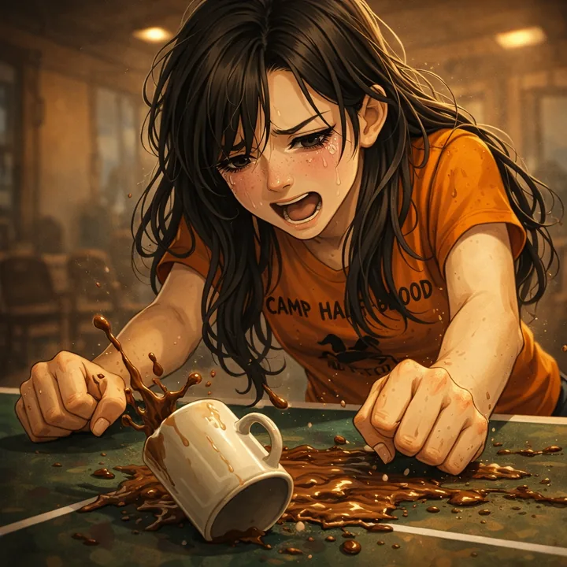
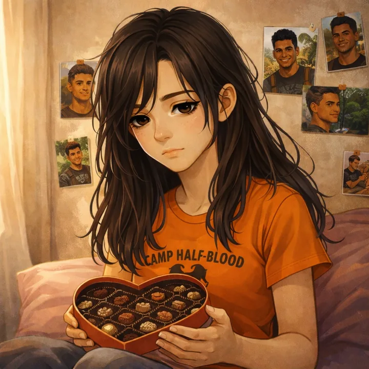

The Last Olympian
CLICK A CHAPTER NUMBER TO START READING
The final battle for Olympus begins in Manhattan. Percy faces Kronos, a looming prophecy, and the possibility that fate might demand the ultimate sacrifice.
I GO CRUISING WITH EXPLOSIVES
The end of the world started when a pegasus landed on the hood of my car.
Up until then, I was having a great afternoon. Technically I wasn’t supposed to be driving because I wouldn’t turn sixteen for another week, but my mom and my stepdad, Paul, took my friend Rachel and me to this private stretch of beach on the South Shore, and Paul let us borrow his Prius for a short spin.
Now, I know you’re thinking, Wow, that was really irresponsible of him, blah, blah, blah, but Paul knows me pretty well. He’s seen me slice up demons and leap out of exploding school buildings, so he probably figured taking a car a few hundred yards wasn’t exactly the most dangerous thing I’d ever done.
Anyway, Rachel and I were driving along. It was a hot August day. Rachel’s red hair was pulled back in a ponytail and she wore a white blouse over her swimsuit. I’d never seen her in anything but ratty T-shirts and paint-splattered jeans before, and she looked like a million golden drachma.
“Oh, pull up right there!” she told me.
We parked on a ridge overlooking the Atlantic. The sea is always one of my favorite places, but today it was especially nice—glittery green and smooth as glass, like my dad was keeping it calm just for us.
My dad, by the way, is Poseidon. He can do stuff like that.
“So.” Rachel smiled at me. “About that invitation.”
“Oh…right.” I tried to sound excited. I mean, she’d asked me to her family’s vacation house on St. Thomas for three days. I didn’t get a lot of offers like that. My family’s idea of a fancy vacation was a weekend in a rundown cabin on Long Island with some movie rentals and a couple of frozen pizzas, and here Rachel’s folks were willing to let me tag along to the Caribbean.
Besides, I seriously needed a vacation. This summer had been the hardest of my life. The idea of taking a break even for a few days was really tempting.
Still, something big was supposed to go down any day now. I was “on call” for a mission. Even worse, next week was my birthday. There was this prophecy that said when I turned sixteen, bad things would happen.
“Percy,” she said, “I know the timing is bad. But it’s always bad for you, right?”
She had a point.
“I really want to go,” I promised. “It’s just—”
“The war.”
I nodded. I didn’t like talking about it, but Rachel knew. Unlike most mortals, she could see through the Mist—the magic veil that distorts human vision. She’d seen monsters. She’d met some of the other demigods who were fighting the Titans and their allies. She’d even been there last summer when the chopped-up Lord Kronos rose out of his coffin in a terrible new form, and she’d earned my permanent respect by nailing him in the eye with a blue plastic hairbrush.
She put her hand on my arm. “Just think about it, okay? We don’t leave for a couple of days. My dad…” Her voice faltered.
“Is he giving you a hard time?” I asked.
Rachel shook her head in disgust. “He’s trying to be nice to me, which is almost worse. He wants me to go to Clarion Ladies Academy in the fall.”
“The school where your mom went?”
“It’s a stupid finishing school for society girls, all the way in New Hampshire. Can you see me in finishing school?”
I admitted the idea sounded pretty dumb. Rachel was into urban art projects and feeding the homeless and going to protest rallies to “Save the Endangered Yellow-bellied Sapsucker” and stuff like that. I’d never even seen her wear a dress. It was hard to imagine her learning to be a socialite.
She sighed. “He thinks if he does a bunch of nice stuff for me, I’ll feel guilty and give in.”
“Which is why he agreed to let me come with you guys on vacation?”
“Yes…but Percy, you’d be doing me a huge favor. It would be so much better if you were with us. Besides, there’s something I want to talk—” She stopped abruptly.
“Something you want to talk about?” I asked. “You mean…so serious we’d have to go to St. Thomas to talk about it?”
She pursed her lips. “Look, just forget it for now. Let’s pretend we’re a couple of normal people. We’re out for a drive, and we’re watching the ocean, and it’s nice to be together.”
I could tell something was bothering her, but she put on a brave smile. The sunlight made her hair look like fire.
We’d spent a lot of time together this summer. I hadn’t exactly planned it that way, but the more serious things got at camp, the more I found myself needing to call up Rachel and get away, just for some breathing room. I needed to remind myself that the mortal world was still out there, away from all the monsters using me as their personal punching bag.
“Okay,” I said. “Just a normal afternoon and two normal people.”
She nodded. “And so…hypothetically, if these two people liked each other, what would it take to get the stupid guy to kiss the girl, huh?”

“Oh…” I felt like one of Apollo’s sacred cows—slow, dumb, and bright red. “Um…”
I can’t pretend I hadn’t thought about Rachel. She was so much easier to be around than…well, than some other girls I knew. I didn’t have to work hard, or watch what I said, or rack my brain trying to figure out what she was thinking. Rachel didn’t hide much. She let you know how she felt.
I’m not sure what I would’ve done, but I was so distracted, I didn’t notice the huge black form swooping down from the sky until four hooves landed on the hood of the Prius with a WUMP-WUMP-CRUNCH!
Hey, boss, a voice said in my head. Nice car!
Blackjack the pegasus was an old friend of mine, so I tried not to get too annoyed by the craters he’d just put in the hood; but I didn’t think my stepdad would be real stoked.
“Blackjack,” I sighed. “What are you—”
Then I saw who was riding on his back, and I knew my day was about to get a lot more complicated.
“’Sup, Percy.”
Charles Beckendorf, senior counselor for the Hephaestus cabin, would make most monsters cry for their mommies. He was this huge African American guy with ripped muscles from working in the forges every summer. He was two years older than me, and one of the camp’s best armorsmiths. He made some seriously ingenious mechanical stuff. A month before, he’d rigged a Greek firebomb in the bathroom of a tour bus that was carrying a bunch of monsters across country. The explosion took out a whole legion of Kronos’s evil meanies as soon as the first harpy went flush.
Beckendorf was dressed for combat. He wore a bronze breastplate and war helm with black camo pants and a sword strapped to his side. His explosives bag was slung over his shoulder.

“Time?” I asked.
He nodded grimly.
A clump formed in my throat. I’d known this was coming. We’d been planning it for weeks, but I’d half hoped it would never happen.
Rachel looked up at Beckendorf. “Hi.”
“Oh, hey. I’m Beckendorf. You must be Rachel. Percy’s told me…uh, I mean he mentioned you.”
Rachel raised an eyebrow. “Really? Good.” She glanced at Blackjack, who was clopping his hooves against the hood of the Prius. “So I guess you guys have to go save the world now.”
“Pretty much,” Beckendorf agreed.
I looked at Rachel helplessly. “Would you tell my mom—”
“I’ll tell her. I’m sure she’s used to it. And I’ll explain to Paul about the hood.”
I nodded my thanks. I figured this might be the last time Paul loaned me his car.
“Good luck.” Rachel kissed me before I could even react. “Now, get going, half-blood. Go kill some monsters for me.”

My last view of her was sitting in the shotgun seat of the Prius, her arms crossed, watching as Blackjack circled higher and higher, carrying Beckendorf and me into the sky. I wondered what Rachel wanted to talk to me about, and whether I’d live long enough to find out.
“So,” Beckendorf said, “I’m guessing you don’t want me to mention that little scene to Annabeth.”
“Oh, gods,” I muttered. “Don’t even think about it.”
Beckendorf chuckled, and together we soared out over the Atlantic.
It was almost dark by the time we spotted our target. The Princess Andromeda glowed on the horizon—a huge cruise ship lit up yellow and white. From a distance, you’d think it was just a party ship, not the headquarters for the Titan lord. Then as you got closer, you might notice the giant masthead—a dark-haired maiden in a Greek chiton, wrapped in chains with a look of horror on her face, as if she could smell the stench of all the monsters she was being forced to carry.

Seeing the ship again twisted my gut into knots. I’d almost died twice on the Princess Andromeda. Now it was heading straight for New York.
“You know what to do?” Beckendorf yelled over the wind.
I nodded. We’d done dry runs at the dockyards in New Jersey, using abandoned ships as our targets. I knew how little time we would have. But I also knew this was our best chance to end Kronos’s invasion before it ever started.
“Blackjack,” I said, “set us down on the lowest stern deck.”
Gotcha, boss, he said. Man, I hate seeing that boat.
Three years ago, Blackjack had been enslaved on the Princess Andromeda until he’d escaped with a little help from my friends and me. I figured he’d rather have his mane braided like My Little Pony than be back here again.
“Don’t wait for us,” I told him.
But, boss—
“Trust me,” I said. “We’ll get out by ourselves.”
Blackjack folded his wings and plummeted toward the boat like a black comet. The wind whistled in my ears. I saw monsters patrolling the upper decks of the ship—dracaenae snake-women, hellhounds, giants, and the humanoid seal-demons known as telkhines—but we zipped by so fast, none of them raised the alarm. We shot down the stern of the boat, and Blackjack spread his wings, lightly coming to a landing on the lowest deck. I climbed off, feeling queasy.
Good luck, boss, Blackjack said. Don’t let ’em turn you into horse meat!
With that, my old friend flew off into the night. I took my pen out of my pocket, uncapped it, and Riptide sprang to full size—three feet of deadly Celestial bronze glowing in the dusk.

Beckendorf pulled a piece of paper of out his pocket. I thought it was a map or something. Then I realized it was a photograph. He stared at it in the dim light—the smiling face of Silena Beauregard, daughter of Aphrodite. They’d started going out last summer, after years of the rest of us saying, “Duh, you guys like each other!” Even with all the dangerous missions, Beckendorf had been happier this summer than I’d ever seen him.
“We’ll make it back to camp,” I promised.
For a second I saw worry in his eyes. Then he put on his old confident smile.
“You bet,” he said. “Let’s go blow Kronos back into a million pieces.”
Beckendorf led the way. We followed a narrow corridor to the service stairwell, just like we’d practiced, but we froze when we heard noises above us.
“I don’t care what your nose says!” snarled a half-human, half-dog voice—a telkhine. “The last time you smelled half-blood, it turned out to be a meat loaf sandwich!”
“Meat loaf sandwiches are good!” a second voice snarled. “But this is half-blood scent, I swear. They are on board!”
“Bah, your brain isn’t on board!”
They continued to argue, and Beckendorf pointed downstairs. We descended as quietly as we could. Two floors down, the voices of the telkhines started to fade.
Finally we came to a metal hatch. Beckendorf mouthed the words engine room.
It was locked, but Beckendorf pulled some chain cutters out of his bag and split the bolt like it was made of butter.
Inside, a row of yellow turbines the size of grain silos churned and hummed. Pressure gauges and computer terminals lined the opposite wall. A telkhine was hunched over a console, but he was so involved with his work, he didn’t notice us. He was about five feet tall, with slick black seal fur and stubby little feet. He had the head of a Doberman, but his clawed hands were almost human. He growled and muttered as he tapped on his keyboard. Maybe he was messaging his friends on uglyface.com.

I stepped forward, and he tensed, probably smelling something was wrong. He leaped sideways toward a big red alarm button, but I blocked his path. He hissed and lunged at me, but one slice of Riptide, and he exploded into dust.
“One down,” Beckendorf said. “About five thousand to go.” He tossed me a jar of thick green liquid—Greek fire, one of the most dangerous magical substances in the world.
Then he threw me another essential tool of demigod heroes—duct tape.
“Slap that one on the console,” he said. “I’ll get the turbines.”
We went to work. The room was hot and humid, and in no time we were drenched in sweat.
The boat kept chugging along. Being the son of Poseidon and all, I have perfect bearings at sea. Don’t ask me how, but I could tell we were at 40.19° North, 71.90° West, making eighteen knots, which meant the ship would arrive in New York Harbor by dawn. This would be our only chance to stop it.
I had just attached a second jar of Greek fire to the control panels when I heard the pounding of feet on metal steps—so many creatures coming down the stairwell I could hear them over the engines. Not a good sign.
I locked eyes with Beckendorf. “How much longer?”
“Too long.” He tapped his watch, which was our remote control detonator. “I still have to wire the receiver and prime the charges. Ten more minutes at least.”
Judging from the sound of the footsteps, we had about ten seconds.
“I’ll distract them,” I said. “Meet you at the rendezvous point.”
“Percy—”
“Wish me luck.”
He looked like he wanted to argue. The whole idea had been to get in and out without being spotted. But we were going to have to improvise.
“Good luck,” he said.
I charged out the door.
A half dozen telkhines were tromping down the stairs. I cut through them with Riptide faster than they could yelp. I kept climbing—past another telkhine, who was so startled he dropped his Lil’ Demons lunch box. I left him alive— partly because his lunch box was cool, partly so he could raise the alarm and hopefully get his friends to follow me rather than head toward the engine room.
I burst through a door onto deck six and kept running. I’m sure the carpeted hall had once been very plush, but over the last three years of monster occupation the wallpaper, carpet, and stateroom doors had been clawed up and slimed so it looked like the inside of a dragon’s throat (and yes, unfortunately, I speak from experience).
Back on my first visit to the Princess Andromeda, my old enemy Luke had kept some dazed tourists on board for show, shrouded in Mist so they didn’t realize they were on a monster-infested ship. Now I didn’t see any sign of tourists. I hated to think what had happened to them, but I kind of doubted they’d been allowed to go home with their bingo winnings.
I reached the promenade, a big shopping mall that took up the whole middle of the ship, and I stopped cold. In the middle of the courtyard stood a fountain. And in the fountain squatted a giant crab.
I’m not talking giant like $7.99 all-you-can-eat Alaskan king crab. I’m talking giant like bigger than the fountain. The monster rose ten feet out of the water. Its shell was mottled blue and green, its pincers longer than my body.
If you’ve ever seen a crab’s mouth, all foamy and gross with whiskers and snapping bits, you can imagine this one didn’t look any better blown up to billboard size. Its beady black eyes glared at me, and I could see intelligence in them—and hate. The fact that I was the son of the sea god was not going to win me any points with Mr. Crabby.

“FFFFfffffff,” it hissed, sea foam dripping from its mouth. The smell coming off it was like a garbage can full of fish sticks that had been sitting in the sun all week.
Alarms blared. Soon I was going to have lots of company and I had to keep moving.
“Hey, crabby.” I inched around the edge of the courtyard. “I’m just gonna scoot around you so—”
The crab moved with amazing speed. It scuttled out of the fountain and came straight at me, pincers snapping. I dove into a gift shop, plowing through a rack of T-shirts. A crab pincer smashed the glass walls to pieces and raked across the room. I dashed back outside, breathing heavily, but Mr. Crabby turned and followed.
“There!” a voice said from a balcony above me. “Intruder!”
If I’d wanted to create a distraction, I’d succeeded, but this was not where I wanted to fight. If I got pinned down in the center of the ship, I was crab chow.
The demonic crustacean lunged at me. I sliced with Riptide, taking off the tip of its claw. It hissed and foamed, but didn’t seem very hurt.
I tried to remember anything from the old stories that might help with this thing. Annabeth had told me about a monster crab—something about Hercules crushing it under his foot? That wasn’t going to work here. This crab was slightly bigger than my Reeboks.
Then a weird thought came to me. Last Christmas, my mom and I had brought Paul Blofis to our old cabin at Montauk, where we’d been going forever. Paul had taken me crabbing, and when he’d brought up a net full of the things, he’d shown me how crabs have a chink in their armor, right in the middle of their ugly bellies.
The only problem was getting to the ugly belly.
I glanced at the fountain, then at the marble floor, already slick from scuttling crab tracks. I held out my hand, concentrating on the water, and the fountain exploded. Water sprayed everywhere, three stories high, dousing the balconies and the elevators and the windows of the shops. The crab didn’t care. He loved water. He came at me sideways, snapping and hissing, and I ran straight at him, screaming, “AHHHHHHH!”
Just before we collided, I hit the ground baseball-style and slid on the wet marble floor straight under him. It was like sliding under a seven-ton armored vehicle. All the crab had to do was sit and squash me, but before he realized what was going on, I jabbed Riptide into the chink in his armor, let go of the hilt, and pushed myself out the backside.
The monster shuddered and hissed. His eyes dissolved. His shell turned bright red as his insides evaporated. The empty shell clattered to the floor in a massive heap.
I didn’t have time to admire my handiwork. I ran for the nearest stairs while all around me monsters and demigods shouted orders and strapped on their weapons. I was empty-handed. Riptide, being magic, would appear in my pocket sooner or later, but for now it was stuck somewhere under the wreckage of the crab, and I had no time to retrieve it.
In the elevator foyer on deck eight, a couple of dracaenae slithered across my path. From the waist up, they were women with green scaly skin, yellow eyes, and forked tongues. From the waist down, they had double snake trunks instead of legs. They held spears and weighted nets, and I knew from experience they could use them.

“What isss thisss?” one said. “A prize for Kronosss!”
I wasn’t in the mood to play break-the-snake, but in front of me was a stand with a model of the ship, like a YOU ARE HERE display. I ripped the model off the pedestal and hurled it at the first dracaena. The boat smacked her in her face and she went down with the ship. I jumped over her, grabbed her friend’s spear, and swung her around. She slammed into the elevator, and I kept running toward the front of the ship.
“Get him!” she screamed.
Hellhounds bayed. An arrow from somewhere whizzed past my face and impaled itself in the mahogany-paneled wall of the stairwell.
I didn’t care—as long as I got the monsters away from the engine room and gave Beckendorf more time.
As I was running up the stairwell, a kid charged down.
He looked like he’d just woken up from a nap. His armor was half on. He drew his sword and yelled, “Kronos!” but he sounded more scared than angry. He couldn’t have been more than twelve—about the same age I was when I first went to Camp Half-Blood.
That thought depressed me. This kid was getting brain-washed—trained to hate the gods and lash out because he’d been born half Olympian. Kronos was using him, and yet the kid thought I was his enemy.
No way was I going to hurt him. I didn’t need a weapon for this. I stepped inside his strike and grabbed his wrist, slamming it against the wall. His sword clattered out of his hand.
Then I did something I hadn’t planned on. It was probably stupid. It definitely jeopardized our mission, but I couldn’t help it.
“If you want to live,” I told him, “get off this ship now. Tell the other demigods.” Then I shoved him downstairs and sent him tumbling to the next floor.
I kept climbing.
Bad memories: a hallway ran past the cafeteria. Annabeth, my half brother Tyson, and I had sneaked through here three years ago on my first visit.
I burst outside onto the main deck. Off the port bow, the sky was darkening from purple to black. A swimming pool glowed between two glass towers with more balconies and restaurant decks. The whole upper ship seemed eerily deserted.
All I had to do was cross to the other side. Then I could take the staircase down to the helipad—our emergency rendezvous point. With any luck, Beckendorf would meet me there. We’d jump into the sea. My water powers would protect us both, and we’d detonate the charges from a quarter mile away.
I was halfway across the deck when the sound of a voice made me freeze. “You’re late, Percy.”
Luke stood on the balcony above me, a smile on his scarred face. He wore jeans, a white T-shirt, and flip-flops, like he was just a normal college-age guy, but his eyes told the truth. They were solid gold.
“We’ve been expecting you for days.” At first he sounded normal, like Luke. But then his face twitched. A shudder passed through his body like he’d just drunk something really nasty. His voice became heavier, ancient, and powerful—the voice of the Titan lord Kronos. The words scraped down my spine like a knife blade. “Come, bow before me.”
“Yeah, that’ll happen,” I muttered.
Laistrygonian giants filed in on either side of the swimming pool as if they’d been waiting for a cue. Each was eight feet tall with tattooed arms, leather armor, and spiked clubs. Demigod archers appeared on the roof above Luke. Two hellhounds leaped down from the opposite balcony and snarled at me. Within seconds I was surrounded. A trap: there’s no way they could’ve gotten into position so fast unless they’d known I was coming.
I looked up at Luke, and anger boiled inside me. I didn’t know if Luke’s consciousness was even still alive inside that body. Maybe, the way his voice had changed…or maybe it was just Kronos adapting to his new form. I told myself it didn’t matter. Luke had been twisted and evil long before Kronos possessed him.
A voice in my head said: I have to fight him eventually. Why not now?
According to that big prophecy, I was supposed to make a choice that saved or destroyed the world when I was sixteen. That was only seven days away. Why not now? If I really had the power, what difference would a week make? I could end this threat right here by taking down Kronos. Hey, I’d fought monsters and gods before.
As if reading my thoughts, Luke smiled. No, he was Kronos. I had to remember that.
“Come forward,” he said. “If you dare.”
The crowd of monsters parted. I moved up the stairs, my heart pounding. I was sure somebody would stab me in the back, but they let me pass. I felt my pocket and found my pen waiting. I uncapped it, and Riptide grew into a sword.
Kronos’s weapon appeared in his hands—a six-footlong scythe, half Celestial bronze, half mortal steel. Just looking at the thing made my knees turn to Jell-O. But before I could change my mind, I charged.
Time slowed down. I mean literally slowed down, because Kronos had that power. I felt like I was moving through syrup. My arms were so heavy, I could barely raise my sword. Kronos smiled, swirling his scythe at normal speed and waiting for me to creep toward my death.

I tried to fight his magic. I concentrated on the sea around me—the source of my power. I’d gotten better at channeling it over the years, but now nothing seemed to happen.
I took another slow step forward. Giants jeered. Dracaenae hissed with laughter.
Hey, ocean, I pleaded. Any day now would be good.
Suddenly there was a wrenching pain in my gut. The entire boat lurched sideways, throwing monsters off their feet. Four thousand gallons of salt water surged out of the swimming pool, dousing me and Kronos and everyone on the deck. The water revitalized me, breaking the time spell, and I lunged forward.
I struck at Kronos, but I was still too slow. I made the mistake of looking at his face—Luke’s face—a guy who was once my friend. As much as I hated him, it was hard to kill him.
Kronos had no such hesitation. He sliced downward with his scythe. I leaped back, and the evil blade missed by an inch, cutting a gash in the deck right between my feet.
I kicked Kronos in the chest. He stumbled backward, but he was heavier than Luke should’ve been. It was like kicking a refrigerator.
Kronos swung his scythe again. I intercepted with Riptide, but his strike was so powerful, my blade could only deflect it. The edge of the scythe shaved off my shirtsleeve and grazed my arm. It shouldn’t have been a serious cut, but the entire side of my body exploded with pain. I remembered what a sea demon had once said about Kronos’s scythe: Careful, fool. One touch, and the blade will sever your soul from your body. Now I understood what he meant. I wasn’t just losing blood. I could feel my strength, my will, my identity draining away.
I stumbled backward, switched my sword to my left hand, and lunged desperately. My blade should’ve run him through, but it deflected off his stomach like I was hitting solid marble. There was no way he should’ve survived that.
Kronos laughed. “A poor performance, Percy Jackson. Luke tells me you were never his match at swordplay.”
My vision started to blur. I knew I didn’t have much time. “Luke had a big head,” I said. “But at least it was his head.”
“A shame to kill you now,” Kronos mused, “before the final plan unfolds. I would love to see the terror in your eyes when you realize how I will destroy Olympus.”
“You’ll never get this boat to Manhattan.” My arm was throbbing. Black spots danced in my eyes.
“And why would that be?” Kronos’s golden eyes glittered. His face—Luke’s face—seemed like a mask, unnatural and lit from behind by some evil power. “Perhaps you are counting on your friend with the explosives?”
He looked down at the pool and called, “Nakamura!”
A teenage guy in full Greek armor pushed through the crowd. His left eye was covered with a black patch. I knew him, of course: Ethan Nakamura, the son of Nemesis. I’d saved his life in the Labyrinth last summer, and in return, the little punk had helped Kronos come back to life.
“Success, my lord,” Ethan called. “We found him just as we were told.”
He clapped his hands, and two giants lumbered forward, dragging Charles Beckendorf between them. My heart almost stopped. Beckendorf had a swollen eye and cuts all over his face and arms. His armor was gone and his shirt was nearly torn off.
“No!” I yelled.
Beckendorf met my eyes. He glanced at his hand like he was trying to tell me something. His watch. They hadn’t taken it yet, and that was the detonator. Was it possible the explosives were armed? Surely the monsters would’ve dismantled them right away.
“We found him amidships,” one of the giants said, “trying to sneak to the engine room. Can we eat him now?”
“Soon.” Kronos scowled at Ethan. “Are you sure he didn’t set the explosives?”
“He was going toward the engine room, my lord.”
“How do you know that?”
“Er…” Ethan shifted uncomfortably. “He was heading in that direction. And he told us. His bag is still full of explosives.”
Slowly, I began to understand. Beckendorf had fooled them. When he’d realized he was going to be captured, he turned to make it look like he was going the other way. He’d convinced them he hadn’t made it to the engine room yet. The Greek fire might still be primed! But that didn’t do us any good unless we could get off the ship and detonate it.
Kronos hesitated.
Buy the story, I prayed. The pain in my arm was so bad now I could barely stand.
“Open his bag,” Kronos ordered.
One of the giants ripped the explosives satchel from Beckendorf’s shoulders. He peered inside, grunted, and turned it upside down. Panicked monsters surged backward. If the bag really had been full of Greek fire jars, we would’ve all blown up. But what fell out were a dozen cans of peaches.
I could hear Kronos breathing, trying to control his anger.
“Did you, perhaps,” he said, “capture this demigod near the galley?”
Ethan turned pale. “Um—”
“And did you, perhaps, send someone to actually CHECK THE ENGINE ROOM?”
Ethan scrambled back in terror, then turned on his heels and ran.

I cursed silently. Now we had only minutes before the bombs were disarmed. I caught Beckendorf’s eyes again and asked a silent question, hoping he would understand: How long?
He cupped his fingers and thumb, making a circle. ZERO. There was no delay on the timer at all. If he managed to press the detonator button, the ship would blow at once. We’d never be able to get far enough away before using it. The monsters would kill us first, or disarm the explosives, or both.
Kronos turned toward me with a crooked smile. “You’ll have to excuse my incompetent help, Percy Jackson, but it doesn’t matter. We have you now. We’ve known you were coming for weeks.”
He held out his hand and dangled a little silver bracelet with a scythe charm—the Titan lord’s symbol.
The wound in my arm was sapping my ability to think, but I muttered, “Communication device…spy at camp.”
Kronos chuckled. “You can’t count on friends. They will always let you down. Luke learned that lesson the hard way. Now drop your sword and surrender to me, or your friend dies.”
I swallowed. One of the giants had his hand around Beckendorf’s neck. I was in no shape to rescue him, and even if I tried, he would die before I got there. We both would.
Beckendorf mouthed one word: Go.
I shook my head. I couldn’t just leave him.
The second giant was still rummaging through the peach cans, which meant Beckendorf’s left arm was free. He raised it slowly—toward the watch on his right wrist.
I wanted to scream, NO!
Then down by the swimming pool, one of the dracaenae hissed, “What isss he doing? What isss that on hisss wrissst?”
Beckendorf closed eyes tight and brought his hand up to his watch.
I had no choice. I threw my sword like a javelin at Kronos. It bounced harmlessly off his chest, but it did startle him. I pushed through a crowd of monsters and jumped off the side of the ship—toward the water a hundred feet below.
I heard rumbling deep in the ship. Monsters yelled at me from above. A spear sailed past my ear. An arrow pierced my thigh, but I barely had time to register the pain. I plunged into the sea and willed the currents to take me far, far away—a hundred yards, two hundred yards.
Even from that distance, the explosion shook the world. Heat seared the back of my head. The Princess Andromeda blew up from both sides, a massive fireball of green flame roiling into the dark sky, consuming everything.
Beckendorf, I thought.
Then I blacked out and sank like an anchor toward the bottom of the sea.

I MEET SOME FISHY RELATIVES
Demigod dreams suck.
The thing is, they’re never just dreams. They’ve got to be visions, omens, and all that other mystical stuff that makes my brain hurt.
I dreamed I was in a dark palace at the top of a mountain. Unfortunately, I recognized it: the palace of the Titans on top of Mount Othrys, otherwise known as Mount Tamalpais, in California. The main pavilion was open to the night, ringed with black Greek columns and statues of the Titans. Torchlight glowed against the black marble floor. In the center of the room, an armored giant struggled under the weight of a swirling funnel cloud—Atlas, holding up the weight of the sky.
Two other giant men stood nearby over a bronze brazier, studying images in the flames.
“Quite an explosion,” one said. He wore black armor studded with silver dots like a starry night. His face was covered in a war helm with ram’s horns curling on either side.
“It doesn’t matter,” the other said. This Titan was dressed in gold robes, with golden eyes like Kronos. His entire body glowed. He reminded me of Apollo, God of the Sun, except the Titan’s light was harsher, and his expression crueler. “The gods have answered the challenge. Soon they will be destroyed.”

The images in the fire were hard to make out: storms, buildings crumbling, mortals screaming in terror.
“I will go east to marshal our forces,” the golden Titan said. “Krios, you shall remain and guard Mount Othrys.”
The ram horn dude grunted. “I always get the stupid jobs. Lord of the South. Lord of Constellations. Now I get to babysit Atlas while you have all the fun.”
Under the whirlwind of clouds, Atlas bellowed in agony. “Let me out, curse you! I am your greatest warrior. Take my burden so I may fight!”
“Quiet!” the golden Titan roared. “You had your chance, Atlas. You failed. Kronos likes you just where you are. As for you, Krios, do your duty.”
“And if you need more warriors?” Krios asked. “Our treacherous nephew in the tuxedo will not do you much good in a fight.”
The golden Titan laughed. “Don’t worry about him. Besides, the gods can barely handle our first little challenge. They have no idea how many others we have in store. Mark my words, in a few days’ time, Olympus will be in ruins, and we will meet here again to celebrate the dawn of the Sixth Age!”
The golden Titan erupted into the flames and disappeared.
“Oh, sure,” Krios grumbled. “He gets to erupt into flames. I get to wear these stupid ram’s horns.”
The scene shifted. Now I was outside the pavilion, hiding in the shadows of a Greek column. A boy stood next to me, eavesdropping on the Titans. He had dark silky hair, pale skin, and dark clothes—my friend Nico di Angelo, the son of Hades.
He looked straight at me, his expression grim. “You see, Percy?” he whispered. “You’re running out of time. Do you really think you can beat them without my plan?”
His words washed over me as cold as the ocean floor, and my dreams went black.
“Percy?” a deep voice said.
My head felt like it had been microwaved in aluminum foil. I opened my eyes and saw a large shadowy figure looming over me.
“Beckendorf?” I asked hopefully.
“No, brother.”
My eyes refocused. I was looking at a Cyclops—a misshapen face, ratty brown hair, one big brown eye full of concern. “Tyson?”
My brother broke into a toothy grin. “Yay! Your brain works!”

I wasn’t so sure. My body felt weightless and cold. My voice sounded wrong. I could hear Tyson, but it was more like I was hearing vibrations inside my skull, not the regular sounds.
I sat up, and a gossamer sheet floated away. I was on a bed made of silky woven kelp, in a room paneled with abalone shell. Glowing pearls the size of basketballs floated around the ceiling, providing light. I was under water.
Now, being the son of Poseidon and all, I was okay with this. I can breathe underwater just fine, and my clothes don’t even get wet unless I want them to. But it was still a bit of a shock when a hammerhead shark drifted through the bedroom window, regarded me, and then swam calmly out the opposite side of the room.
“Where—”
“Daddy’s palace,” Tyson said.
Under different circumstances, I would’ve been excited. I’d never visited Poseidon’s realm, and I’d been dreaming about it for years. But my head hurt. My shirt was still speckled with burn marks from the explosion. My arm and leg wounds had healed—just being in the ocean can do that for me, given enough time—but I still felt like I’d been trampled by a Laistrygonian soccer team in cleats.
“How long—”
“We found you last night,” Tyson said, “sinking through the water.”
“The Princess Andromeda?”
“Went ka-boom,” Tyson confirmed.
“Beckendorf was on board. Did you find…”
Tyson’s face darkened. “No sign of him. I am sorry, brother.”
I stared out the window into deep blue water. Beckendorf was supposed to go to college in the fall. He had a girlfriend, lots of friends, his whole life ahead of him. He couldn’t be gone. Maybe he’d made it off the ship like I had. Maybe he’d jumped over the side…and what? He couldn’t have survived a hundred-foot fall into the water like I could. He couldn’t have put enough distance between himself and the explosion.
I knew in my gut he was dead. He’d sacrificed himself to take out the Princess Andromeda, and I had abandoned him.
I thought about my dream: the Titans discussing the explosion as if it didn’t matter, Nico di Angelo warning me that I would never beat Kronos without following his plan—a dangerous idea I’d been avoiding for more than a year.
A distant blast shook the room. Green light blazed outside, turning the whole sea as bright as noon.
“What was that?” I asked.
Tyson looked worried. “Daddy will explain. Come, he is blowing up monsters.”
The palace might have been the most amazing place I’d ever seen if it hadn’t been in the process of getting destroyed. We swam to the end of a long hallway and shot upward on a geyser. As we rose over the rooftops I caught my breath— well, if you can catch your breath underwater.
The palace was as big as the city on Mount Olympus, with wide courtyards, gardens, and columned pavilions. The gardens were sculpted with coral colonies and glowing sea plants. Twenty or thirty buildings were made of abalone, white but gleaming with rainbow colors. Fish and octopi darted in and out of the windows. The paths were lined with glowing pearls like Christmas lights.

The main courtyard was filled with warriors—mermen with fish tails from the waist down and human bodies from the waist up, except their skin was blue, which I’d never known before. Some were tending the wounded. Some were sharpening spears and swords. One passed us, swimming in a hurry. His eyes were bright green, like that stuff they put in glo-sticks, and his teeth were shark teeth. They don’t show you stuff like that in The Little Mermaid.
Outside the main courtyard stood large fortifications— towers, walls, and antisiege weapons—but most of these had been smashed to ruins. Others were blazing with a strange green light that I knew well—Greek fire, which can burn even underwater.
Beyond this, the sea floor stretched into gloom. I could see battles raging—flashes of energy, explosions, the glint of armies clashing. A regular human would’ve found it too dark to see. Heck, a regular human would’ve been crushed by the pressure and frozen by the cold. Even my heat-sensitive eyes couldn’t make out exactly what was going on.
At the edge of the palace complex, a temple with a red coral roof exploded, sending fire and debris streaming in slow motion across the farthest gardens. Out of the darkness above, an enormous form appeared—a squid larger than any skyscraper. It was surrounded by a glittering cloud of dust—at least I thought it was dust until I realized it was a swarm of mermen trying to attack the monster. The squid descended on the palace, swatted its tentacles, smashing whole columns of warriors. Then a brilliant arc of blue light shot from the rooftop of one of the tallest buildings.

The light hit the giant squid, and the monster dissolved like food coloring in water.
“Daddy,” Tyson said, pointing to where the light had come from.
“He did that?” I suddenly felt more hopeful. My dad had unbelievable powers. He was the god of the sea. He could deal with this attack, right? Maybe he’d let me help.
“Have you been in the fight?” I asked Tyson in awe. “Like bashing heads with your awesome Cyclops strength and stuff?”
Tyson pouted, and immediately I knew I’d asked a bad question. “I have been…fixing weapons,” he mumbled. “Come. Let’s go find Daddy.”
I know this might sound weird to people with, like, regular parents, but I’d only seen my dad four or five times in my life, and never for more than a few minutes. The Greek gods don’t exactly show up for their kids’ basketball games. Still, I thought I would recognize Poseidon on sight.
I was wrong.
The roof of the temple was a big open deck that had been set up as a command center. A mosaic on the floor showed an exact map of the palace grounds and the surrounding ocean, but the mosaic moved. Colored stone tiles representing different armies and sea monsters shifted around as the forces changed position. Buildings that collapsed in real life also collapsed in the picture.
Standing around the mosaic, grimly studying the battle, was a strange assortment of warriors, but none of them looked like my dad. I was searching for a big guy with a good tan and a black beard, wearing Bermuda shorts and a Hawaiian shirt.
There was nobody like that. One guy was a merman with two fishtails instead of one. His skin was green, his armor studded with pearls. His black hair was tied in a ponytail, and he looked young—though it’s hard to tell with non-humans. They could be a thousand years old or three. Standing next to him was an old man with a flowing white beard and gray hair. His battle armor seemed to weigh him down. He had green eyes and smile wrinkles around his eyes, but he wasn’t smiling now. He was studying the map and leaning on a large metal staff. To his right stood a beautiful woman in green armor with long black hair and strange little horns like crab claws. And there was a dolphin—just a regular dolphin, but it was staring at the map intently.
“Delphin,” the old man said. “Send Palaemon and his legion of sharks to the western front. We have to neutralize those leviathans.”
The dolphin spoke in a chattering voice, but I could understand it in my mind: Yes, lord! It sped away.
I looked in dismay at Tyson, then back at the old man.
It didn’t seem possible, but…“Dad?” I asked.
The old man looked up. I recognized the twinkle in his eyes, but his face…he looked like he’d aged forty years.

“Hello, Percy.”
“What—what happened to you?”
Tyson nudged me. He was shaking his head so hard I was afraid it would fall off, but Poseidon didn’t look offended.
“It’s all right, Tyson,” he said. “Percy, excuse my appearance. The war has been hard on me.”
“But you’re immortal,” I said quietly. “You can look…any way you want.”
“I reflect the state of my realm,” he said. “And right now that state is quite grim. Percy, I should introduce you—I’m afraid you just missed my lieutenant Delphin, God of the Dolphins. This is my, er, wife, Amphitrite. My dear—”
The lady in green armor stared at me coldly, then crossed her arms and said, “Excuse me, my lord. I am needed in the battle.”

She swam away.
I felt pretty awkward, but I guess I couldn’t blame her. I’d never thought about it much, but my dad had an immortal wife. All his romances with mortals, including with my mom…well, Amphitrite probably didn’t like that much.
Poseidon cleared his throat. “Yes, well…and this is my son Triton. Er, my other son.”
“Your son and heir,” the green dude corrected. His double fishtails swished back and forth. He smiled at me, but there was no friendliness in his eyes. “Hello, Perseus Jackson. Come to help at last?”

He acted like I was late or lazy. If you can blush underwater, I probably did.
“Tell me what to do,” I said.
Triton smiled like that was a cute suggestion—like I was a slightly amusing dog that had barked for him or something. He turned to Poseidon. “I will see to the front line, Father. Don’t worry. I will not fail.”
He nodded politely to Tyson. How come I didn’t get that much respect? Then he shot off into the water.
Poseidon sighed. He raised his staff, and it changed into his regular weapon—a huge three-pointed trident. The tips glowed with blue light, and the water around it boiled with energy.
“I’m sorry about that,” he told me.
A huge sea serpent appeared from above us and spiraled down toward the roof. It was bright orange with a fanged mouth big enough to swallow a gymnasium.
Hardly looking up, Poseidon pointed his trident at the beast and zapped it with blue energy. Ka-boom! The monster burst into a million goldfish, which all swam off in terror.
“My family is anxious,” Poseidon continued as if nothing had happened. “The battle against Oceanus is going poorly.”
He pointed to the edge of the mosaic. With the butt of his trident he tapped the image of a merman larger than the rest, with the horns of a bull. He appeared to be riding a chariot pulled by crawfish, and instead of a sword he wielded a live serpent.

“Oceanus,” I said, trying to remember. “The Titan of the sea?”
Poseidon nodded. “He was neutral in the first war of gods and Titans. But Kronos has convinced him to fight. This is…well, it’s not a good sign. Oceanus would not commit unless he was sure he could pick the winning side.”
“He looks stupid,” I said, trying to sound upbeat. “I mean, who fights with a snake?”
“Daddy will tie it in knots,” Tyson said firmly.
Poseidon smiled, but he looked weary. “I appreciate your faith. We have been at war almost a year now. My powers are taxed. And still he finds new forces to throw at me— sea monsters so ancient I had forgotten about them.”
I heard an explosion in the distance. About half a mile away, a mountain of coral disintegrated under the weight of two giant creatures. I could dimly make out their shapes. One was a lobster. The other was a giant humanoid like a Cyclops, but he was surrounded by a flurry of limbs. At first I thought he wearing a bunch of giant octopi. Then I realized they were his own arms—a hundred flailing, fighting arms.

“Briares!” I said.
I was happy to see him, but he looked like he was fighting for his life. He was the last of his kind—a Hundred-Handed One, cousin of the Cyclopes. We’d saved him from Kronos’s prison last summer, and I knew he’d come to help Poseidon, but I hadn’t heard of him since.
“He fights well,” Poseidon said. “I wish we had a whole army like him, but he is the only one.”
I watched as Briares bellowed in rage and picked up the lobster, which thrashed and snapped its pincers. He threw it off the coral mountain, and the lobster disappeared into the darkness. Briares swam after it, his hundred arms spinning like the blades of a motorboat.
“Percy, we may not have much time,” my dad said. “Tell me of your mission. Did you see Kronos?”
I told him everything, though my voice choked up when I explained about Beckendorf. I looked down at the courtyards below and saw hundreds of wounded mermen lying on makeshift cots. I saw rows of coral mounds that must’ve been hastily made graves. I realized Beckendorf wasn’t the first death. He was only one of hundreds, maybe thousands. I’d never felt so angry and helpless.
Poseidon stroked his beard. “Percy, Beckendorf chose a heroic death. You bear no blame for that. Kronos’s army will be in disarray. Many were destroyed.”
“But we didn’t kill him, did we?”
As I said it, I knew it was a naive hope. We might blow up his ship and disintegrate his monsters, but a Titan lord wouldn’t be so easy to kill.
“No,” Poseidon admitted. “But you’ve bought our side some time.”
“There were demigods on that ship,” I said, thinking of the kid I’d seen in the stairwell. Somehow I’d allowed myself to concentrate on the monsters and Kronos. I’d convinced myself that destroying their ship was all right because they were evil, they were sailing to attack my city, and besides they couldn’t really be permanently killed. Monsters just vaporized and re-formed eventually. But demigods…
Poseidon put his hand on my shoulder. “Percy, there were only a few demigod warriors aboard that ship, and they all chose to battle for Kronos. Perhaps some heeded your warning and escaped. If they did not…they chose their path.”
“They were brainwashed!” I said. “Now they’re dead and Kronos is still alive. That’s supposed to make me feel better?”
I glared at the mosaic—little tile explosions destroying tile monsters. It seemed so easy when it was just a picture.
Tyson put his arm around me. If anybody else had tried that, I would’ve pushed him away, but Tyson was too big and stubborn. He hugged me whether I wanted it or not. “Not your fault, brother. Kronos does not explode good. Next time we will use a big stick.”
“Percy,” my father said. “Beckendorf’s sacrifice wasn’t in vain. You have scattered the invasion force. New York will be safe for a time, which frees the other Olympians to deal with the bigger threat.”
“The bigger threat?” I thought about what the golden Titan had said in my dream: The gods have answered the challenge. Soon they will be destroyed.
A shadow passed over my father’s face. “You’ve had enough sorrow for one day. Ask Chiron when you return to camp.”
“Return to camp? But you’re in trouble here. I want to help!”
“You can’t, Percy. Your job is elsewhere.”
I couldn’t believe I was hearing this. I looked at Tyson for backup.
My brother chewed his lip. “Daddy…Percy can fight with a sword. He is good.”
“I know that,” Poseidon said gently.
“Dad, I can help,” I said. “I know I can. You’re not going to hold out here much longer.”
A fireball launched into the sky from behind the enemy lines. I thought Poseidon would deflect it or something, but it landed on the outer corner of the yard and exploded, sending mermen tumbling through the water. Poseidon winced as if he’d just been stabbed.
“Return to camp,” he insisted. “And tell Chiron it is time.”
“For what?”
“You must hear the prophecy. The entire prophecy.”
I didn’t need to ask him which prophecy. I’d been hearing about the “Great Prophecy” for years, but nobody would ever tell me the whole thing. All I knew was that I was supposed to make a decision that would decide the fate of the world—but no pressure.
“What if this is the decision?” I said. “Staying here to fight, or leaving? What if I leave and you…”
I couldn’t say die. Gods weren’t supposed to die, but I’d seen it happen. Even if they didn’t die, they could be reduced to nearly nothing, exiled, imprisoned in the depths of Tartarus like Kronos had been.
“Percy, you must go,” Poseidon insisted. “I don’t know what your final decision will be, but your fight lies in the world above. If nothing else, you must warn your friends at camp. Kronos knew your plans. You have a spy. We will hold here. We have no choice.”
Tyson gripped my hand desperately. “I will miss you, brother!”
Watching us, our father seemed to age another ten years. “Tyson, you have work to do as well, my son. They need you in the armory.”
Tyson pouted some more.
“I will go,” he sniffled. He hugged me so hard he almost cracked my ribs. “Percy, be careful! Do not let monsters kill you dead!”
I tried to nod confidently, but it was too much for the big guy. He sobbed and swam away toward the armory, where his cousins were fixing spears and swords.
“You should let him fight,” I told my father. “He hates being stuck in the armory. Can’t you tell?”
Poseidon shook his head. “It is bad enough I must send you into danger. Tyson is too young. I must protect him.”
“You should trust him,” I said. “Not try to protect him.”
Poseidon’s eyes flared. I thought I’d gone too far, but then he looked down at the mosaic and his shoulders sagged. On the tiles, the mermaid guy in the crawfish chariot was coming closer to the palace.
“Oceanus approaches,” my father said. “I must meet him in battle.”
I’d never been scared for a god before, but I didn’t see how my dad could face this Titan and win.
“I will hold,” Poseidon promised. “I will not give up my domain. Just tell me, Percy, do you still have the birthday gift I gave you last summer?”
I nodded and pulled out my camp necklace. It had a bead for every summer I’d been at Camp Half-Blood, but since last year I’d also kept a sand dollar on the cord. My father had given it to me for my fifteenth birthday. He’d told me I would know when to “spend it,” but so far I hadn’t figured out what he meant. All I knew was that it didn’t fit the vending machines in the school cafeteria.

“The time is coming,” he promised. “With luck, I will see you for your birthday next week, and we will have a proper celebration.”
He smiled, and for a moment I saw the old light in his eyes.
Then the entire sea grew dark in front of us, like an inky storm was rolling in. Thunder crackled, which should’ve been impossible underwater. A huge icy presence was approaching. I sensed a wave of fear roll through the armies below us.
“I must assume my true godly form,” Poseidon said. “Go—and good luck, my son.”
I wanted to encourage him, to hug him or something, but knew better than to stick around. When a god assumes his true form, the power is so great that any mortal looking on him will disintegrate.
“Good-bye, Father,” I managed.
Then I turned away. I willed the ocean currents to aid me. Water swirled around me, and I shot toward the surface at speeds that would’ve caused any normal human to pop like a balloon.
When I looked back, all I could see were flashes of green and blue as my father fought the Titan, and the sea itself was torn apart by the two armies.
I GET A SNEAK PEEK AT MY DEATH
If you want to be popular at Camp Half-Blood, don’t come back from a mission with bad news.
Word of my arrival spread as soon as I walked out of the ocean. Our beach is on the North Shore of Long Island, and it’s enchanted so most people can’t even see it. People don’t just appear on the beach unless they’re demigods or gods or really, really lost pizza delivery guys. (It’s happened—but that’s another story.)
Anyway, that afternoon the lookout on duty was Connor Stoll from the Hermes cabin. When he spotted me, he got so excited he fell out of his tree. Then he blew the conch horn to signal the camp and ran to greet me.

Connor had a crooked smile that matched his crooked sense of humor. He’s a pretty nice guy, but you should always keep one hand on your wallet when he’s around, and do not, under any circumstances, give him access to shaving cream unless you want to find your sleeping bag full of it. He’s got curly brown hair and is a little shorter than his brother, Travis, which is the only way I can tell them apart. They are both so unlike my old enemy Luke it’s hard to believe they’re all sons of Hermes.
“Percy!” he yelled. “What happened? Where’s Beckendorf?”
Then he saw my expression, and his smile melted. “Oh, no. Poor Silena. Holy Zeus, when she finds out…”
Together we climbed the sand dunes. A few hundred yards away, people were already streaming toward us, smiling and excited. Percy’s back, they were probably thinking. He’s saved the day! Maybe he brought souvenirs!
I stopped at the dining pavilion and waited for them. No sense rushing down there to tell them what a loser I was.
I gazed across the valley and tried to remember how Camp Half-Blood looked the first time I ever saw it. That seemed like a bajillion years ago.
From the dining pavilion, you could see pretty much everything. Hills ringed the valley. On the tallest, Half-Blood Hill, Thalia’s pine tree stood with the Golden Fleece hanging from its branches, magically protecting the camp from its enemies. The guard dragon Peleus was so big now I could see him from here—curled around the tree trunk, sending up smoke signals as he snored.

To my right spread the woods. To my left, the canoe lake glittered and the climbing wall glowed from the lava pouring down its side. Twelve cabins—one for each Olympian god—made a horseshoe pattern around the commons area. Farther south were the strawberry fields, the armory, and the four-story Big House with its sky blue paint job and its bronze eagle weathervane.
In some ways, the camp hadn’t changed. But you couldn’t see the war by looking at the buildings or the fields. You could see it in the faces of the demigods and satyrs and naiads coming up the hill.
There weren’t as many at camp as four summers ago. Some had left and never come back. Some had died fighting. Others—we tried not to talk about them—had gone over to the enemy.
The ones who were still here were battle-hardened and weary. There was little laughter at camp these days. Even the Hermes cabin didn’t play so many pranks. It’s hard to enjoy practical jokes when your whole life feels like one.
Chiron galloped into the pavilion first, which was easy for him since he’s a white stallion from the waist down. His beard had grown wilder over the summer. He wore a green T-shirt that said MY OTHER CAR IS A CENTAUR and a bow slung over his back.

“Percy!” he said. “Thank the gods. But where…”
Annabeth ran in right behind him, and I’ll admit my heart did a little relay race in my chest when I saw her. It’s not that she tried to look good. We’d been doing so many combat missions lately, she hardly brushed her curly blond hair anymore, and she didn’t care what clothes she was wearing—usually the same old orange camp T-shirt and jeans, and once in a while her bronze armor. Her eyes were stormy gray. Most of the time we couldn’t get through a conversation without trying to strangle each other. Still, just seeing her made me feel fuzzy in the head. Last summer, before Luke had turned into Kronos and everything went sour, there had been a few times when I thought maybe…well, we might get past the strangle-each-other phase.
“What happened?” She grabbed my arm. “Is Luke—”

“The ship blew up,” I said. “He wasn’t destroyed. I don’t know where—”
Silena Beauregard pushed through the crowd. Her hair wasn’t combed and she wasn’t even wearing makeup, which wasn’t like her.
“Where’s Charlie?” she demanded, looking around like he might be hiding.
I glanced at Chiron helplessly.
The old centaur cleared his throat. “Silena, my dear, let’s talk about this at the Big House—”
“No,” she muttered. “No. No.”
She started to cry, and the rest of us stood around, too stunned to speak. We’d already lost so many people over the summer, but this was the worst. With Beckendorf gone, it felt like someone had stolen the anchor for the entire camp.
Finally Clarisse from the Ares cabin came forward. She put her arm around Silena. They had one of the strangest friendships ever—a daughter of the war god and a daughter of the love goddess—but ever since Silena had given Clarisse advice last summer about her first boyfriend, Clarisse had decided she was Silena’s personal bodyguard.
Clarisse was dressed in her bloodred combat armor, her brown hair tucked into a bandana. She was as big and beefy as a rugby player, with a permanent scowl on her face, but she spoke gently to Silena.
“Come on, girl,” she said. “Let’s get to the Big House. I’ll make you some hot chocolate.”

Everyone turned and wandered off in twos and threes, heading back to the cabins. Nobody was excited to see me now. Nobody wanted to hear about the blown-up ship.
Only Annabeth and Chiron stayed behind.
Annabeth wiped a tear from her cheek. “I’m glad you’re not dead, Seaweed Brain.”
“Thanks,” I said. “Me too.”
Chiron put a hand on my shoulder. “I’m sure you did everything you could, Percy. Will you tell us what happened?”
I didn’t want to go through it again, but I told them the story, including the dream of the Titans. I left out the detail about Nico. Nico had made me promise not to tell anybody about his plan until I made up my mind, and the plan was so scary I didn’t mind keeping it a secret.
Chiron gazed down at the valley. “We must call a war council immediately, to discuss this spy, and other matters.”
“Poseidon mentioned another threat,” I said. “Something even bigger than the Princess Andromeda. I thought it might be that challenge the Titan had mentioned in my dream.”
Chiron and Annabeth exchanged looks, like they knew something I didn’t. I hated when they did that.
“We will discuss that also,” Chiron promised.
“One more thing.” I took a deep breath. “When I talked to my father, he said to tell you it’s time. I need to know the full prophecy.”
Chiron’s shoulders sagged, but he didn’t look surprised. “I’ve dreaded this day. Very well. Annabeth, we will show Percy the truth—all of it. Let’s go to the attic.”
I’d been to the Big House attic three times before, which was three times more than I wanted to.
A ladder led up from the top of the staircase. I wondered how Chiron was going to get up there, being half horse and all, but he didn’t try.
“You know where it is,” he told Annabeth. “Bring it down, please.”
Annabeth nodded. “Come on, Percy.”
The sun was setting outside, so the attic was even darker and creepier than usual. Old hero trophies were stacked everywhere—dented shields, pickled heads in jars from various monsters, a pair of fuzzy dice on a bronze plaque that read: STOLEN FROM CHRYSAOR’S HONDA CIVIC, BY GUS, SON OF HERMES, 1988.
I picked up a curved bronze sword so badly bent it looked like the letter M. I could still see green stains on the metal from the magical poison that used to cover it. The tag was dated last summer. It read: Scimitar of Kampê, destroyed in the Battle of the Labyrinth.
“You remember Briares throwing those boulders?” I asked.
Annabeth gave me a grudging smile. “And Grover causing a Panic?”
We locked eyes. I thought of a different time last summer, under Mount St. Helens, when Annabeth thought I was going to die, and she kissed me.
She cleared her throat and looked away. “Prophecy.”
“Right.” I put down the scimitar. “Prophecy.”
We walked over to the window. On a three-legged stool sat the Oracle—a shriveled female mummy in a tie-dyed dress. Tufts of black hair clung to her skull. Glassy eyes stared out of her leathery face. Just looking at her made my skin crawl.

If you wanted to leave camp during the summer, it used to be you had to come up here to get a quest. This summer, that rule had been tossed. Campers left all the time on combat missions. We had no choice if we wanted to stop Kronos.
Still, I remembered too well the strange green mist—the spirit of the Oracle—that lived inside the mummy. She looked lifeless now, but whenever she spoke a prophecy, she moved. Sometimes fog gushed out of her mouth and created strange shapes. Once, she’d even left the attic and taken a little zombie stroll into the woods to deliver a message. I wasn’t sure what she’d do for the “Great Prophecy.” I half expected her to start tap dancing or something.
But she just sat there like she was dead—which she was.
“I never understood this,” I whispered.
“What?” Annabeth asked.
“Why it’s a mummy.”
“Percy, she didn’t used to be a mummy. For thousands of years the spirit of the Oracle lived inside a beautiful maiden. The spirit would be passed on from generation to generation. Chiron told me she was like that fifty years ago.” Annabeth pointed at the mummy. “But she was the last.”
“What happened?”
Annabeth stared to say something, then apparently changed her mind. “Let’s just do our job and get out of here.”
I looked nervously at the Oracle’s withered face. “So what now?”
Annabeth approached the mummy and held out her palms. “O Oracle, the time is at hand. I ask for the Great Prophecy.”
I braced myself, but the mummy didn’t move. Instead, Annabeth approached and unclasped one of its necklaces. I’d never paid too much attention to its jewelry before. I figured it was just hippie love beads and stuff. But when Annabeth turned toward me, she was holding a leather pouch—like a Native American medicine pouch on a cord braided with feathers. She opened the bag and took out a roll of parchment no bigger than her pinky.

“No way,” I said. “You mean all these years, I’ve been asking about this stupid prophecy, and it’s been right there around her neck?”
“The time wasn’t right,” Annabeth said. “Believe me, Percy, I read this when I was ten years old, and I still have nightmares about it.”
“Great,” I said. “Can I read it now?”
“Downstairs at the war council,” Annabeth said. “Not in front of…you know.”
I looked at the glassy eyes of the Oracle, and I decided not to argue. We headed downstairs to join the others. I didn’t know it then, but it would be the last time I ever visited the attic.
The senior counselors had gathered around the Ping-Pong table. Don’t ask me why, but the rec room had become the camp’s informal headquarters for war councils. When Annabeth, Chiron, and I came in, though, it looked more like a shouting match.
Clarisse was still in full battle gear. Her electric spear was strapped to her back. (Actually, her second electric spear, since I’d broken the first one. She called the spear “Maimer.” Behind her back, everybody else called it “Lamer.”) She had her boar-shaped helmet under one arm and a knife at her belt.
She was in the midst of yelling at Michael Yew, the new head counselor for Apollo, which looked kind of funny since Clarisse was a foot taller. Michael had taken over the Apollo cabin after Lee Fletcher died in battle last summer. Michael stood four-foot-six with another two feet of attitude. He reminded me of a ferret, with a pointy nose and scrunched-up features—either because he scowled so much or because he spent too much time looking down the shaft of an arrow.

“It’s our loot!” he yelled, standing on his tiptoes so he could get in Clarisse’s face. “If you don’t like it, you can kiss my quiver!”
Around the table, people were trying not to laugh—the Stoll brothers, Pollux from the Dionysus cabin, Katie Gardner from Demeter. Even Jake Mason, the hastily appointed new counselor from Hephaestus, managed a faint smile. Only Silena Beauregard didn’t pay any attention.
She sat beside Clarisse and stared vacantly at the Ping-Pong net. Her eyes were red and puffy. A cup of hot chocolate sat untouched in front of her. It seemed unfair that she had to be here. I couldn’t believe Clarisse and Michael standing over her, arguing about something as stupid as loot, when she’d just lost Beckendorf.
“STOP IT!” I yelled. “What are you guys doing?”
Clarisse glowered at me. “Tell Michael not to be a selfish jerk.”
“Oh, that’s perfect, coming from you,” Michael said.
“The only reason I’m here is to support Silena!” Clarisse shouted. “Otherwise I’d be back in my cabin.”
“What are you talking about?” I demanded.
Pollux cleared his throat. “Clarisse has refused to speak to any of us, until her, um, issue is resolved. She hasn’t spoken for three days.”
“It’s been wonderful,” Travis Stoll said wistfully.
“What issue?” I asked.
Clarisse turned to Chiron. “You’re in charge, right? Does my cabin get what we want or not?”
Chiron shuffled his hooves. “My dear, as I’ve already explained, Michael is correct. Apollo’s cabin has the best claim. Besides, we have more important matters—”
“Sure,” Clarisse snapped. “Always more important matters than what Ares needs. We’re just supposed to show up and fight when you need us, and not complain!”
“That would be nice,” Connor Stoll muttered.
Clarisse gripped her knife. “Maybe I should ask Mr. D—”
“As you know,” Chiron interrupted, his tone slightly angry now, “our director, Dionysus, is busy with the war. He can’t be bothered with this.”
“I see,” Clarisse said. “And the senior counselors? Are any of you going to side with me?”
Nobody was smiling now. None of them met Clarisse’s eyes.
“Fine.” Clarisse turned to Silena. “I’m sorry. I didn’t mean to get into this when you’ve just lost…Anyway, I apologize. To you. Nobody else.”
Silena didn’t seem to register her words.
Clarisse threw her knife on the Ping-Pong table. “All of you can fight this war without Ares. Until I get satisfaction, no one in my cabin is lifting a finger to help. Have fun dying.”

The counselors were all too stunned to say anything as Clarisse stormed out of the room.
Finally Michael Yew said, “Good riddance.”
“Are you kidding?” Katie Gardner protested. “This is a disaster!”
“She can’t be serious,” Travis said. “Can she?”
Chiron sighed. “Her pride has been wounded. She’ll calm down eventually.” But he didn’t sound convinced.
I wanted to ask what the heck Clarisse was so mad about, but I looked at Annabeth and she mouthed the words I’ll tell you later.
“Now,” Chiron continued, “if you please, counselors. Percy has brought something I think you should hear. Percy—the Great Prophecy.”
Annabeth handed me the parchment. It felt dry and old, and my fingers fumbled with the string. I uncurled the paper, trying not to rip it, and began to read:

“A half-blood of the eldest dogs…”
“Er, Percy?” Annabeth interrupted. “That’s gods. Not dogs.”
“Oh, right,” I said. Being dyslexic is one mark of a demigod, but sometimes I really hate it. The more nervous I am, the worse my reading gets.
“A half-blood of the eldest gods…
Shall reach sixteen against all odds…”
I hesitated, staring at the next lines. A cold feeling started in my fingers as if the paper was freezing.
“And see the world in endless sleep,
The hero’s soul, cursed blade shall reap.”
Suddenly Riptide seemed heavier in my pocket. A cursed blade? Chiron once told me Riptide had brought many people sorrow. Was it possible my own sword could get me killed? And how could the world to fall into endless sleep, unless that meant death?
“Percy,” Chiron urged. “Read the rest.”
My mouth felt like it was full of sand, but I spoke the last two lines.
“A single choice shall…shall end his days.
Olympus to per—pursue—”
“Preserve,” Annabeth said gently. “It means to save.”
“I know what it means,” I grumbled.
“Olympus to preserve or raze.”
The room was silent. Finally Connor Stoll said, “Raise is good, isn’t it?”
“Not raise,” Silena said. Her voice was hollow, but I was startled to hear her speak at all. “R-a-z-e means destroy.”
“Obliterate,” Annabeth said. “Annihilate. Turn to rubble.”
“Got it.” My heart felt like lead. “Thanks.”
Everybody was looking at me—with concern, or pity, or maybe a little fear.
Chiron closed his eyes as if he were saying a prayer. In horse form, his head almost brushed the lights in the rec room. “You see now, Percy, why we thought it best not to tell you the whole prophecy. You’ve had enough on your shoulders—”
“Without realizing I was going to die in the end anyway?” I said. “Yeah, I get it.”
Chiron gazed at me sadly. The guy was three thousand years old. He’d seen hundreds of heroes die. He might not like it, but he was used to it. He probably knew better than to try to reassure me.
“Percy,” Annabeth said. “You know prophecies always have double meanings. It might not literally mean you die.”
“Sure,” I said. “A single choice shall end his days. That has tons of meanings, right?”
“Maybe we can stop it,” Jake Mason offered. “The hero’s soul, cursed blade shall reap. Maybe we could find this cursed blade and destroy it. Sounds like Kronos’s scythe, right?”
I hadn’t thought about that, but it didn’t matter if the cursed blade was Riptide or Kronos’s scythe. Either way, I doubted we could stop the prophecy. A blade was supposed to reap my soul. As general rule, I preferred not to have my soul reaped.
“Perhaps we should let Percy think about these lines,” Chiron said. “He needs time—”
“No.” I folded up the prophecy and shoved it into my pocket. I felt defiant and angry, though I wasn’t sure who I was angry with. “I don’t need time. If I die, I die. I can’t worry about that, right?”
Annabeth’s hands were shaking a little. She wouldn’t meet my eyes.
“Let’s move on,” I said. “We’ve got other problems. We’ve got a spy.”
Michael Yew scowled. “A spy?”
I told them what had happened on the Princess Andromeda—how Kronos had known we were coming, how he’d shown me the silver scythe pendant he’d used to communicate with someone at camp.
Silena started to cry again, and Annabeth put an arm around her shoulders.
“Well,” Connor Stoll said uncomfortably, “we’ve suspected there might a spy for years, right? Somebody kept passing information to Luke—like the location of the Golden Fleece a couple of years ago. It must be somebody who knew him well.”
Maybe subconsciously, he glanced at Annabeth. She’d known Luke better than anyone, of course, but Connor looked away quickly. “Um, I mean, it could be anybody.”
“Yes.” Katie Gardner frowned at the Stoll brothers. She’d disliked them ever since they’d decorated the grass roof of the Demeter cabin with chocolate Easter bunnies. “Like one of Luke’s siblings.”
Travis and Connor both started arguing with her.
“Stop!” Silena banged the table so hard her hot chocolate spilled. “Charlie’s dead and…and you’re all arguing like little kids!” She put her head down and began to sob.
Hot chocolate trickled off the Ping-Pong table. Everybody looked ashamed.
“She’s right,” Pollux said at last. “Accusing each other doesn’t help. We need to keep our eyes open for a silver necklace with a scythe charm. If Kronos had one, the spy probably does too.”
Michael Yew grunted. “We need to find this spy before we plan our next operation. Blowing up the Princess Andromeda won’t stop Kronos forever.”
“No indeed,” Chiron said. “In fact his next assault is already on the way.”
I scowled. “You mean the ‘bigger threat’ Poseidon mentioned?”
He and Annabeth looked at each other like, It’s time. Did I mention I hate it when they do that?
“Percy,” Chiron said, “we didn’t want to tell you until you returned to camp. You needed a break with your…mortal friends.”
Annabeth blushed. It dawned on me that she knew I’d been hanging out with Rachel, and I felt guilty. Then I felt angry that I felt guilty. I was allowed to have friends outside camp, right? It wasn’t like…
“Tell me what’s happened,” I said.
Chiron picked up a bronze goblet from the snack table. He tossed water onto the hot plate where we usually melted nacho cheese. Steam billowed up, making a rainbow in the fluorescent lights. Chiron fished a golden drachma out of his pouch, tossed it through the mist, and muttered, “O Iris, Goddess of the Rainbow, show us the threat.”
The mist shimmered. I saw the familiar image of a smoldering volcano—Mount St. Helens. As I watched, the side of the mountain exploded. Fire, ash, and lava rolled out. A newscaster’s voice was saying “—even larger than last year’s eruption, and geologists warn that the mountain may not be done.”
I knew all about last year’s eruption. I’d caused it. But this explosion was much worse. The mountain tore itself apart, collapsing inward, and an enormous form rose out of the smoke and lava like it was emerging from a manhole. I hoped the Mist would keep the humans from seeing it clearly, because what I saw would’ve caused panic and riots across the entire United States.
The giant was bigger than anything I’d ever encountered. Even my demigod eyes couldn’t make out its exact form through the ash and fire, but it was vaguely humanoid and so huge it could’ve used the Chrysler Building as a baseball bat. The mountain shook with a horrible rumbling, as if the monster were laughing.

“It’s him,” I said. “Typhon.”
I was seriously hoping Chiron would say something good, like No, that’s our huge friend Leroy! He’s going to help us! But no such luck. He simply nodded. “The most horrible monster of all, the biggest single threat the gods ever faced. He has been freed from under the mountain at last. But this scene is from two days ago. Here is what is happening today.”
Chiron waved his hand and the image changed. I saw a bank of storm clouds rolling across the Midwest plains. Lightning flickered. Lines of tornadoes destroyed everything in their path—ripping up houses and trailers, tossing cars around like Matchbox toys.
“Monumental floods,” an announcer was saying. “Five states declared disaster areas as the freak storm system sweeps east, continuing its path of destruction.” The cameras zoomed in on a column of storm bearing down on some Midwest city. I couldn’t tell which one. Inside the storm I could see the giant—just small glimpses of his true form: a smoky arm, a dark clawed hand the size of a city block. His angry roar rolled across the plains like a nuclear blast. Other smaller forms darted through the clouds, circling the monster. I saw flashes of light, and I realized the giant was trying to swat them. I squinted and thought I saw a golden chariot flying into the blackness. Then some kind of huge bird—a monstrous owl—dived in to attack the giant.
“Are those…the gods?” I said.
“Yes, Percy,” Chiron said. “They have been fighting him for days now, trying to slow him down. But Typhon is marching forward—toward New York. Toward Olympus.”
I let that sink in. “How long until he gets here?”
“Unless the gods can stop him? Perhaps five days. Most of the Olympians are there…except your father, who has a war of his own to fight.”
“But then who’s guarding Olympus?”
Connor Stoll shook his head. “If Typhon gets to New York, it won’t matter who’s guarding Olympus.”
I thought about Kronos’s words on the ship: I would love to see the terror in your eyes when you realize how I will destroy Olympus.
Was this what he was talking about: an attack by Typhon? It was sure terrifying enough. But Kronos was always fooling us, misdirecting our attention. This seemed too obvious for him. And in my dream, the golden Titan had talked about several more challenges to come, as if Typhon were only the first.
“It’s a trick,” I said. “We have to warn the gods. Something else is going to happen.”
Chiron looked at me gravely. “Something worse than Typhon? I hope not.”
“We have to defend Olympus,” I insisted. “Kronos has another attack planned.”
“He did,” Travis Stoll reminded me. “But you sunk his ship.”
Everyone was looking at me. They wanted some good news. They wanted to believe that at least I’d given them a little bit of hope.
I glanced at Annabeth. I could tell we were thinking the same thing: What if the Princess Andromeda was a ploy? What if Kronos let us blow up that ship so we’d lower our guard?
But I wasn’t going to say that in front of Silena. Her boyfriend had sacrificed himself for that mission.
“Maybe you’re right,” I said, though I didn’t believe it.
I tried to imagine how things could get much worse. The gods were in the Midwest fighting a huge monster that had almost defeated them once before. Poseidon was under siege and losing a war against the sea Titan Oceanus. Kronos was still out there somewhere. Olympus was virtually undefended. The demigods of Camp Half-Blood were on our own with a spy in our midst.
Oh, and according to the ancient prophecy, I was going to die when I turned sixteen—which happened to be in five days, the exact same time Typhon was supposed to hit New York. Almost forgot that.
“Well,” Chiron said, “I think that’s enough for one night.”
He waved his hand and the steam dissipated. The stormy battle of Typhon and the gods disappeared.
“That’s an understatement,” I muttered.
And the war council adjourned.
WE BURN A METAL SHROUD
I dreamed Rachel Elizabeth Dare was throwing darts at my picture.
She was standing in her room…Okay, back up. I have to explain that Rachel doesn’t have a room. She has the top floor of her family’s mansion, which is a renovated brownstone in Brooklyn. Her “room” is a huge loft with industrial lighting and floor-to-ceiling windows. It’s about twice as big as my mom’s apartment.
Some alt rock was blaring from her paint-covered Bose docking system. As far as I could tell, Rachel’s only rule about music was that no two songs on her iPod could sound the same, and they all had to be strange.
She wore a kimono, and her hair was frizzy, like she’d been sleeping. Her bed was messed up. Sheets hung over a bunch of artist’s easels. Dirty clothes and old energy bar wrappers were strewn around the floor, but when you’ve got a room that big, the mess doesn’t look so bad. Out the windows you could see the entire nighttime skyline of Manhattan.

The picture she was attacking was a painting of me standing over the giant Antaeus. Rachel had painted it a couple of months ago. My expression in the picture was fierce—disturbing, even—so it was hard to tell if I was the good guy or the bad guy, but Rachel said I’d looked just like that after the battle.

“Demigods,” Rachel muttered as she threw another dart at the canvas. “And their stupid quests.”
Most of the darts bounced off, but a few stuck. One hung off my chin like a goatee.
Someone pounded on her bedroom door.
“Rachel!” a man shouted. “What in the world are you doing? Turn off that—”
Rachel scooped up her remote control and shut off the music. “Come in!”
Her dad walked in, scowling and blinking from the light. He had rust-colored hair a little darker than Rachel’s. It was smushed on one side like he’d lost a fight with his pillow. His blue silk pajamas had “WD” monogrammed on the pocket. Seriously, who has monogrammed pajamas?

“What is going on?” he demanded. “It’s three in the morning.”
“Couldn’t sleep,” Rachel said.
On the painting, a dart fell off my face. Rachel hid the rest behind her back, but Mr. Dare noticed.
“So…I take it your friend isn’t coming to St. Thomas?” That’s what Mr. Dare called me. Never Percy. Just your friend. Or young man if he was talking to me, which he rarely did.
Rachel knit her eyebrows. “I don’t know.”
“We leave in the morning,” her dad said. “If he hasn’t made up his mind yet—”
“He’s probably not coming,” Rachel said miserably. “Happy?”
Mr. Dare put his hands behind his back. He paced the room with a stern expression. I imagined he did that in the boardroom of his land development company and made his employees nervous.
“Are you still having bad dreams?” he asked. “Headaches?”
Rachel threw her darts on the floor. “I should never have told you about that.”
“I’m your father,” he said. “I’m worried about you.”
“Worried about the family’s reputation,” Rachel muttered.
Her father didn’t react—maybe because he’d heard that comment before, or maybe because it was true.
“We could call Dr. Arkwright,” he suggested. “He helped you get through the death of your hamster.”
“I was six then,” she said. “And no, Dad, I don’t need a therapist. I just…” She shook her head helplessly.
Her father stopped in front of the windows. He gazed at the New York skyline as if he owned it—which wasn’t true. He only owned part of it.
“It will be good for you to get away,” he decided. “You’ve had some unhealthy influences.”
“I’m not going to Clarion Ladies Academy,” Rachel said. “And my friends are none of your business.”
Mr. Dare smiled, but it wasn’t a warm smile. It was more like, Someday you’ll realize how silly you sound.
“Try to get some sleep,” he urged. “We’ll be at the beach by tomorrow night. It will be fun.”
“Fun,” Rachel repeated. “Lots of fun.”
Her father exited the room. He left the door open behind him.
Rachel stared at the portrait of me. Then she walked to the easel next to it, which was covered in a sheet.
“I hope they’re dreams,” she said.
She uncovered the easel. On it was a hastily sketched charcoal, but Rachel was a good artist. The picture was definitely Luke as a young boy. He was about nine years old, with a wide grin and no scar on his face. I had no idea how Rachel could’ve known what he looked like back then, but the portrait was so good I had a feeling she wasn’t guessing. From what I knew about Luke’s life (which wasn’t much), the picture showed him just before he’d found out he was a half-blood and had run away from home.

Rachel stared at the portrait. Then she uncovered the next easel. This picture was even more disturbing. It showed the Empire State Building with lightning all around it. In the distance a dark storm was brewing, with a huge hand coming out of the clouds. At the base of the building a crowd had gathered…but it wasn’t a normal crowd of tourists and pedestrians. I saw spears, javelins, and banners—the trappings of an army.

“Percy,” Rachel muttered, as if she knew I was listening, “what is going on?”
The dream faded, and the last thing I remember was wishing I could answer her question.
The next morning, I wanted to call her, but there were no phones at camp. Dionysus and Chiron didn’t need a landline. They just called Olympus with an Iris-message whenever they needed something. And when demigods use cell phones, the signals agitate every monster within a hundred miles. It’s like sending up a flare: Here I am! Please rearrange my face! Even within the safe borders of camp, that’s not the kind of advertising we wanted to do.
Most demigods (except for Annabeth and a few others) don’t even own cell phones. And I definitely couldn’t tell Annabeth, “Hey, let me borrow your phone so I can call Rachel!” To make the call, I would’ve had to leave camp and walk several miles to the nearest convenience store. Even if Chiron let me go, by the time I got there, Rachel would’ve been on the plane to Saint Thomas.
I ate a depressing breakfast by myself at the Poseidon table. I kept staring at the fissure in the marble floor where two years ago Nico had banished a bunch of bloodthirsty skeletons to the Underworld. The memory didn’t exactly improve my appetite.
After breakfast, Annabeth and I walked down to inspect the cabins. Actually, it was Annabeth’s turn for inspection. My morning chore was to sort through reports for Chiron. But since we both hated our jobs, we decided to do them together so it wouldn’t be so heinous.
We started at the Poseidon cabin, which was basically just me. I’d made my bunk bed that morning (well, sort of) and straightened the Minotaur horn on the wall, so I gave myself a four out of five.
Annabeth made a face. “You’re being generous.” She used the end of her pencil to pick up an old pair of running shorts.
I snatched them away. “Hey, give me a break. I don’t have Tyson cleaning up after me this summer.”
“Three out of five,” Annabeth said. I knew better than to argue, so we moved along.
I tried to skim through Chiron’s stack of reports as we walked. There were messages from demigods, nature spirits, and satyrs all around the country, writing about the latest monster activity. They were pretty depressing, and my ADHD brain did not like concentrating on depressing stuff.
Little battles were raging everywhere. Camp recruitment was down to zero. Satyrs were having trouble finding new demigods and bringing them to Half-Blood Hill because so many monsters were roaming the country. Our friend Thalia, who led the Hunters of Artemis, hadn’t been heard from in months, and if Artemis knew what had happened to them, she wasn’t sharing information.
We visited the Aphrodite cabin, which of course got a five out of five. The beds were perfectly made. The clothes in everyone’s footlockers were color coordinated. Fresh flowers bloomed on the windowsills. I wanted to dock a point because the whole place reeked of designer perfume, but Annabeth ignored me.
“Great job as usual, Silena,” Annabeth said.
Silena nodded listlessly. The wall behind her bed was decorated with pictures of Beckendorf. She sat on her bunk with a box of chocolates on her lap, and I remembered that her dad owned a chocolate store in the Village, which was how he’d caught the attention of Aphrodite.
“You want a bonbon?” Silena asked. “My dad sent them. He thought—he thought they might cheer me up.”
“Are they any good?” I asked.
She shook her head. “They taste like cardboard.”
I didn’t have anything against cardboard, so I tried one. Annabeth passed. We promised to see Silena later and kept going.
As we crossed the commons area, a fight broke out between the Ares and Apollo cabins. Some Apollo campers armed with firebombs flew over the Ares cabin in a chariot pulled by two pegasi. I’d never seen the chariot before, but it looked like a pretty sweet ride. Soon, the roof of the Ares cabin was burning, and naiads from the canoe lake rushed over to blow water on it.
Then the Ares campers called down a curse, and all the Apollo kids’ arrows turned to rubber. The Apollo kids kept shooting at the Ares kids, but the arrows bounced off.
Two archers ran by, chased by an angry Ares kid who was yelling in poetry: “Curse me, eh? I’ll make you pay! / I don’t want to rhyme all day!”
Annabeth sighed. “Not that again. Last time Apollo cursed a cabin, it took a week for the rhyming couplets to wear off.”
I shuddered. Apollo was god of poetry as well as archery, and I’d heard him recite in person. I’d almost rather get shot by an arrow.
“What are they fighting about anyway?” I asked.
Annabeth ignored me while she scribbled on her inspection scroll, giving both cabins a one out of five.
I found myself staring at her, which was stupid since I’d seen her a billion times. She and I were about the same height this summer, which was a relief. Still, she seemed so much more mature. It was kind of intimidating. I mean, sure, she’d always been cute, but she was starting to be seriously beautiful.

Finally she said, “That flying chariot.”
“What?”
“You asked what they were fighting about.”
“Oh. Oh, right.”
“They captured it in a raid in Philadelphia last week. Some of Luke’s demigods were there with that flying chariot. The Apollo cabin seized it during the battle, but the Ares cabin led the raid. So they’ve been fighting about who gets it ever since.”
We ducked as Michael Yew’s chariot dive-bombed an Ares camper. The Ares camper tried to stab him and cuss him out in rhyming couplets. He was pretty creative about rhyming those cuss words.
“We’re fighting for our lives,” I said, “and they’re bickering about some stupid chariot.”
“They’ll get over it,” Annabeth said. “Clarisse will come to her senses.”
I wasn’t so sure. That didn’t sound like the Clarisse I knew.
I scanned more reports and we inspected a few more cabins. Demeter got a four. Hephaestus got a three and probably should’ve gotten lower, but with Beckendorf being gone and all, we cut them some slack. Hermes got a two, which was no surprise. All campers who didn’t know their godly parentage were shoved into the Hermes cabin, and since the gods were kind of forgetful, that cabin was always overcrowded.
Finally we got to Athena’s cabin, which was orderly and clean as usual. Books were straightened on the shelves. The armor was polished. Battle maps and blueprints decorated the walls. Only Annabeth’s bunk was messy. It was covered in papers, and her silver laptop was still running.
“Vlacas,” Annabeth muttered, which was basically calling herself an idiot in Greek.
Her second-in-command, Malcolm, suppressed a smile. “Yeah, um…we cleaned everything else. Didn’t know if it was safe to move your notes.”
That was probably smart. Annabeth had a bronze knife that she reserved just for monsters and people who messed with her stuff.
Malcolm grinned at me. “We’ll wait outside while you finish inspection.” The Athena campers filed out the door while Annabeth cleaned up her bunk.

I shuffled uneasily and pretended to go through some more reports. Technically, even on inspection, it was against camp rules for two campers to be…like, alone in a cabin.
That rule had come up a lot when Silena and Beckendorf started dating. And I know some of you might be thinking, Aren’t all demigods related on the godly side, and doesn’t that make dating gross? But the thing is, the godly side of your family doesn’t count, genetically speaking, since gods don’t have DNA. A demigod would never think about dating someone who had the same godly parent. Like two kids from Athena cabin? No way. But a daughter of Aphrodite and a son of Hephaestus? They’re not related. So it’s no problem.
Anyway, for some strange reason I was thinking about this as I watched Annabeth straighten up. She closed her laptop, which had been given to her as a gift from the inventor Daedalus last summer.
I cleared my throat. “So…get any good info from that thing?”
“Too much,” she said. “Daedalus had so many ideas, I could spend fifty years just trying to figure them all out.”
“Yeah,” I muttered. “That would be fun.”
She shuffled her papers—mostly drawings of buildings and a bunch of handwritten notes. I knew she wanted to be an architect someday, but I’d learned the hard way not to ask what she was working on. She’d start talking about angles and load-bearing joints until my eyes glazed over.
“You know…” She brushed her hair behind her ear, like she does when she’s nervous. “This whole thing with Beckendorf and Silena. It kind of makes you think. About…what’s important. About losing people who are important.”
I nodded. My brain started seizing on little random details, like the fact that she was still wearing those silver owl earrings from her dad, who was this brainiac military history professor in San Francisco.
“Um, yeah,” I stammered. “Like…is everything cool with your family?”
Okay, really stupid question, but hey, I was nervous.
Annabeth looked disappointed, but she nodded.
“My dad wanted to take me to Greece this summer,” she said wistfully. “I’ve always wanted to see—”
“The Parthenon,” I remembered.
She managed a smile. “Yeah.”
“That’s okay. There’ll be other summers, right?”
As soon as I said it, I realized it was a boneheaded comment. I was facing the end of my days. Within a week, Olympus might fall. If the Age of the Gods really did end, the world as we knew it would dissolve into chaos. Demigods would be hunted to extinction. There would be no more summers for us.
Annabeth stared at her inspection scroll. “Three out five,” she muttered, “for a sloppy head counselor. Come on. Let’s finish your reports and get back to Chiron.”
On the way to the Big House, we read the last report, which was handwritten on a maple leaf from a satyr in Canada. If possible, the note made me feel even worse.
“‘Dear Grover,’” I read aloud. “‘Woods outside Toronto attacked by giant evil badger. Tried to do as you suggested and summon power of Pan. No effect. Many naiads’ trees destroyed. Retreating to Ottawa. Please advise. Where are you? —Gleeson Hedge, protector.’”
Annabeth grimaced. “You haven’t heard anything from him? Even with your empathy link?”
I shook my head dejectedly.
Ever since last summer when the god Pan had died, our friend Grover had been drifting farther and farther away. The Council of Cloven Elders treated him like an outcast, but Grover still traveled all over the East Coast, trying to spread the word about Pan and convince nature spirits to protect their own little bits of the wild. He’d only come back to camp a few times to see his girlfriend, Juniper.
Last I’d heard he was in Central Park organizing the dryads, but nobody had seen or heard from him in two months. We’d tried to send Iris-messages. They never got through. I had an empathy link with Grover, so I hoped I would know if anything bad happened to him. Grover had told me one time that if he died, the empathy link might kill me too. But I wasn’t sure if that was still true or not.
I wondered if he was still in Manhattan. Then I thought about my dream of Rachel’s sketch—dark clouds closing on the city, an army gathered around the Empire State Building.
“Annabeth.” I stopped her by the tetherball court. I knew I was asking for trouble, but I didn’t know who else to trust. Plus, I’d always depended on Annabeth for advice. “Listen, I had this dream about, um, Rachel…”
I told her the whole thing, even the weird picture of Luke as a child.
For a while she didn’t say anything. Then she rolled up her inspection scroll so tight she ripped it. “What do you want me to say?”
“I’m not sure. You’re the best strategist I know. If you were Kronos planning this war, what would you do next?”
“I’d use Typhon as a distraction. Then I’d hit Olympus directly, while the gods were in the West.”
“Just like in Rachel’s picture.”
“Percy,” she said, her voice tight, “Rachel is just a mortal.”
“But what if her dream is true? Those other Titans— they said Olympus would be destroyed in a matter of days. They said they had plenty of other challenges. And what’s with that picture of Luke as a kid—”
“We’ll just have to be ready.”
“How?” I said. “Look at our camp. We can’t even stop fighting each other. And I’m supposed to get my stupid soul reaped.”
She threw down her scroll. “I knew we shouldn’t have shown you the prophecy.” Her voice was angry and hurt. “All it did was scare you. You run away from things when you’re scared.”
I stared at her, completely stunned. “Me? Run away?”
She got right in my face. “Yes, you. You’re a coward, Percy Jackson!”
We were nose to nose. Her eyes were red, and I suddenly realized that when she called me a coward, maybe she wasn’t talking about the prophecy.

“If you don’t like our chances,” she said, “maybe you should go on that vacation with Rachel.”
“Annabeth—”
“If you don’t like our company.”
“That’s not fair!”
She pushed past me and stormed toward the strawberry fields. She hit the tetherball as she passed and sent it spinning angrily around the pole.
I’d like to say my day got better from there. Of course it didn’t.
That afternoon we had an assembly at the campfire to burn Beckendorf’s burial shroud and say our good-byes. Even the Ares and Apollo cabins called a temporary truce to attend.
Beckendorf’s shroud was made out of metal links, like chain mail. I didn’t see how it would burn, but the Fates must’ve been helping out. The metal melted in the fire and turned to golden smoke, which rose into the sky. The campfire flames always reflected the campers’ moods, and today they burned black.
I hoped Beckendorf’s spirit would end up in Elysium. Maybe he’d even choose to be reborn and try for Elysium in three different lifetimes so he could reach the Isles of the Blest, which was like the Underworld’s ultimate party headquarters. If anyone deserved it, Beckendorf did.
Annabeth left without a word to me. Most of the other campers drifted off to their afternoon activities. I just stood there staring at the dying fire. Silena sat nearby crying, while Clarisse and her boyfriend, Chris Rodriguez, tried to comfort her.
Finally I got up the nerve to walk over. “Hey, Silena, I’m really sorry.”
She sniffled. Clarisse glared at me, but she always glares at everyone. Chris would barely look at me. He’d been one of Luke’s men until Clarisse rescued him from the Labyrinth last summer, and I guess he still felt guilty about it.
I cleared my throat. “Silena, you know Beckendorf carried your picture. He looked at it right before we went into battle. You meant a lot to him. You made the last year the best of his life.”
Silena sobbed.
“Good work, Percy,” Clarisse muttered.
“No, it’s all right,” Silena said. “Thank…thank you, Percy. I should go.”
“You want company?” Clarisse asked.
Silena shook her head and ran off.
“She’s stronger than she looks,” Clarisse muttered, almost to herself. “She’ll survive.”
“You could help with that,” I suggested. “You could honor Beckendorf’s memory by fighting with us.”
Clarisse went for her knife, but it wasn’t there anymore. She’d thrown it on the Ping-Pong table in the Big House.
“Not my problem,” she growled. “My cabin doesn’t get honor, I don’t fight.”
I noticed she wasn’t speaking in rhymes. Maybe she hadn’t been around when her cabinmates got cursed, or maybe she had a way of breaking the spell. With a chill, I wondered if Clarisse could be Kronos’s spy at camp. Was that why she was keeping her cabin out of the fight? But as much as I disliked Clarisse, spying for the Titans didn’t seem like her style.
“All right,” I told her. “I didn’t want to bring this up, but you owe me one. You’d be rotting in a Cyclops’s cave in the Sea of Monsters if it wasn’t for me.”
She clenched her jaw. “Any other favor, Percy. Not this. The Ares cabin has been dissed too many times. And don’t think I don’t know what people say about me behind my back.”
I wanted to say, Well, it’s true. But I bit my tongue.
“So, what—you’re just going to let Kronos crush us?” I asked.
“If you want my help so bad, tell Apollo to give us the chariot.”
“You’re such a big baby.”
She charged me, but Chris got between us. “Whoa, guys,” he said. “Clarisse, you know, maybe he’s got a point.”

She sneered at him. “Not you too!”
She trudged off with Chris at her heels. “Hey, wait! I just meant—Clarisse, wait!”
I watched the last sparks from Beckendorf’s fire curl into the afternoon sky. Then I headed toward the sword-fighting arena. I needed a break, and I wanted to see an old friend.
I DRIVE MY DOG INTO A TREE
Mrs. O’Leary saw me before I saw her, which was a pretty good trick considering she’s the size of a garbage truck. I walked into the arena, and a wall of darkness slammed into me.
“WOOF!”
The next thing I knew I was flat on the ground with a huge paw on my chest and an oversized Brillo pad tongue licking my face.

“Ow!” I said. “Hey, girl. Good to see you too. Ow!”
It took a few minutes for Mrs. O’Leary to calm down and get off me. By then I was pretty much drenched in dog drool. She wanted to play fetch, so I picked up a bronze shield and tossed it across the arena.
By the way, Mrs. O’Leary is the world’s only friendly hellhound. I kind of inherited her when her previous owner died. She lived at camp, but Beckendorf…well, Beckendorf used to take care of her whenever I was gone. He had smelted Mrs. O’Leary’s favorite bronze chewing bone. He’d forged her collar with the little smiley face and a crossbones name tag. Next to me, Beckendorf had been her best friend.
Thinking about that made me sad all over again, but I threw the shield a few more times because Mrs. O’Leary insisted.
Soon she started barking—a sound slightly louder than an artillery gun—like she needed to go for a walk. The other campers didn’t think it was funny when she went to the bathroom in the arena. It had caused more than one unfortunate slip-and-slide accident. So I opened the gates of the arena, and she bounded straight toward the woods.
I jogged after her, not too concerned that she was getting ahead. Nothing in the woods could threaten Mrs. O’Leary. Even the dragons and giant scorpions ran away when she came close.
When I finally tracked her down, she wasn’t using the facilities. She was in a familiar clearing where the Council of Cloven Elders had once put Grover on trial. The place didn’t look so good. The grass had turned yellow. The three topiary thrones had lost all their leaves. But that’s not what surprised me. In the middle of the glade stood the weirdest trio I’d ever seen: Juniper the tree nymph, Nico di Angelo, and a very old, very fat satyr.

Nico was the only one who didn’t seem freaked out by Mrs. O’Leary’s appearance. He looked pretty much like I’d seen him in my dream—an aviator’s jacket, black jeans, and a T-shirt with dancing skeletons on it, like one of those Day of the Dead pictures. His Stygian iron sword hung at his side. He was only twelve, but he looked much older and sadder.
He nodded when he saw me, then went back to scratching Mrs. O’Leary’s ears. She sniffed his legs like he was the most interesting thing since rib-eye steaks. Being the son of Hades, he’d probably been traveling in all sorts of hellhound-friendly places.
The old satyr didn’t look nearly so happy. “Will someone—what is this underworld creature doing in my forest!” He waved his arms and trotted on his hooves as if the grass were hot. “You there, Percy Jackson! Is this your beast?”
“Sorry, Leneus,” I said. “That’s your name, right?”
The satyr rolled his eyes. His fur was dust-bunny gray, and a spiderweb grew between his horns. His belly would’ve made him an invincible bumper car. “Well, of course I’m Leneus. Don’t tell me you’ve forgotten a member of the Council so quickly. Now, call off your beast!”
“WOOF!” Mrs. O’Leary said happily.
The old satyr gulped. “Make it go away! Juniper, I will not help you under these circumstances!”
Juniper turned toward me. She was pretty in a dryad-y way, with her purple gossamer dress and her elfish face, but her eyes were green-tinted with chlorophyll from crying.
“Percy,” she sniffled. “I was just asking about Grover. I know something’s happened. He wouldn’t stay gone this long if he wasn’t in trouble. I was hoping that Leneus—”
“I told you!” the satyr protested. “You are a better off without that traitor.”
Juniper stamped her foot. “He is not a traitor! He’s the bravest satyr ever, and I want to know where he is!”
“WOOF!”
Leneus’s knees started knocking. “I…I won’t answer questions with this hellhound sniffing my tail!”
Nico looked like he was trying to not crack up. “I’ll walk the dog,” he volunteered.
He whistled, and Mrs. O’Leary bounded after him to the far end of the grove.
Leneus huffed indignantly and brushed the twigs off his shirt. “Now, as I was trying to explain, young lady, your boyfriend has not sent any reports since we voted him into exile.”
“You tried to vote him into exile,” I corrected. “Chiron and Dionysus stopped you.”
“Bah! They are honorary Council members. It wasn’t a proper vote.”
“I’ll tell Dionysus you said that.”
Leneus paled. “I only meant…Now see here, Jackson. This is none of your business.”
“Grover’s my friend,” I said. “He wasn’t lying to you about Pan’s death. I saw it myself. You were just too scared to accept the truth.”
Leneus’s lips quivered. “No! Grover’s a liar and good riddance. We’re better off without him.”
I pointed at the withered thrones. “If things are going so well, where are your friends? Looks like your Council hasn’t been meeting lately.”
“Maron and Silenus…I…I’m sure they’ll be back,” he said, but I could hear the panic in his voice. “They’re just taking some time off to think. It’s been a very unsettling year.”
“It’s going to get a lot more unsettling,” I promised.
“Leneus, we need Grover. There’s got to be a way you can find him with your magic.”
The old satyr’s eye twitched. “I’m telling you, I’ve heard nothing. Perhaps he’s dead.”
Juniper choked back a sob.
“He’s not dead,” I said. “I can feel that much.”
“Empathy links,” Leneus said disdainfully. “Very unreliable.”
“So ask around,” I insisted. “Find him. There’s a war coming. Grover was preparing the nature spirits.”
“Without my permission! And it’s not our war.”
I grabbed him by the shirt, which seriously wasn’t like me, but the stupid old goat was making me mad. “Listen, Leneus. When Kronos attacks, he’s going to have packs of hellhounds. He’s going to destroy everything in his path— mortals, gods, demigods. Do you think he’ll let the satyrs go free? You’re supposed to be a leader. So LEAD. Get out there and see what’s happening. Find Grover and bring Juniper some news. Now, GO!”

I didn’t push him very hard, but he was kind of top-heavy. He fell on his furry rump, then scrambled to his hooves and ran away with his belly jiggling. “Grover will never be accepted! He will die an outcast!”
When he’d disappeared into the bushes, Juniper wiped her eyes. “I’m sorry, Percy. I didn’t mean to get you involved. Leneus is still a lord of the Wild. You don’t want to make an enemy of him.”
“No problem,” I said. “I’ve got worse enemies than overweight satyrs.”
Nico walked back to us. “Good job, Percy. Judging from the trail of goat pellets, I’d say you shook him up pretty well.”
I was afraid I knew why Nico was here, but I tried for a smile. “Welcome back. Did you come by just to see Juniper?”
He blushed. “Um, no. That was an accident. I kind of…dropped into the middle of their conversation.”
“He scared us to death!” Juniper said. “Right out of the shadows. But, Nico, you are the son of Hades and all. Are you sure you haven’t heard anything about Grover?”
Nico shifted his weight. “Juniper, like I tried to tell you…even if Grover died, he would reincarnate into something else in nature. I can’t sense things like that, only mortal souls.”
“But if you do hear anything?” she pleaded, putting her hand on his arm. “Anything at all?”
Nico’s cheeks got even brighter red. “Uh, you bet. I’ll keep my ears open.”
“We’ll find him, Juniper,” I promised. “Grover’s alive, I’m sure. There must be a simple reason why he hasn’t contacted us.”
She nodded glumly. “I hate not being able to leave the forest. He could be anywhere, and I’m stuck here waiting. Oh, if that silly goat has gotten himself hurt—”
Mrs. O’Leary bounded back over and took an interest in Juniper’s dress.

Juniper yelped. “Oh, no you don’t! I know about dogs and trees. I’m gone!”
She went poof into green mist. Mrs. O’Leary looked disappointed, but she lumbered off to find another target, leaving Nico and me alone.
Nico tapped his sword on the ground. A tiny mound of animal bones erupted from the dirt. They knit themselves together into a skeletal field mouse and scampered off. “I was sorry to hear about Beckendorf.”
A lump formed in my throat. “How did you—”
“I talked to his ghost.”
“Oh…right.” I’d never get used to the fact that this twelve-year-old kid spent more time talking with the dead than the living. “Did he say anything?”
“He doesn’t blame you. He figured you’d be beating yourself up, and he said you shouldn’t.”
“Is he going to try for rebirth?”
Nico shook his head. “He’s staying in Elysium. Said he’s waiting for someone. Not sure what he meant, but he seems okay with death.”
It wasn’t much comfort, but it was something.
“I had a vision you were on Mount Tam,” I told Nico. “Was that—”
“Real,” he said. “I didn’t mean to be spying on the Titans, but I was in the neighborhood.”
“Doing what?”
Nico tugged at his sword belt. “Following a lead on…you know, my family.”
I nodded. I knew his past was a painful subject. Until two years ago, he and his sister Bianca had been frozen in time at a place called the Lotus Hotel and Casino. They’d been there for like seventy years. Eventually a mysterious lawyer rescued them and checked them into a boarding school, but Nico had no memories of his life before the casino. He didn’t know anything about his mother. He didn’t know who the lawyer was, or why they’d been frozen in time or allowed to go free. After Bianca died and left Nico alone, he’d been obsessed with finding answers.
“So how did it go?” I asked. “Any luck?”
“No,” he murmured. “But I may have a new lead soon.”
“What’s the lead?”
Nico chewed his lip. “That’s not important right now. You know why I’m here.”
A feeling of dread started to build in my chest. Ever since Nico first proposed his plan for beating Kronos last summer, I’d had nightmares about it. He would show up occasionally and press me for an answer, but I kept putting him off.
“Nico, I don’t know,” I said. “It seems pretty extreme.”
“You’ve got Typhon coming in, what…a week? Most of the other Titans are unleashed now and on Kronos’s side. Maybe it’s time to think extreme.”
I looked back toward the camp. Even from this distance I could hear the Ares and Apollo campers fighting again, yelling curses and spouting bad poetry.
“They’re no match for the Titan army,” Nico said. “You know that. This comes down to you and Luke. And there’s only one way you can beat Luke.”
I remembered the fight on the Princess Andromeda. I’d been hopelessly outmatched. Kronos had almost killed me with a single cut to my arm, and I couldn’t even wound him. Riptide had glanced right off his skin.
“We can give you the same power,” Nico urged. “You heard the Great Prophecy. Unless you want to have your soul reaped by a cursed blade…”
I wondered how Nico had heard the prophecy— probably from some ghost.
“You can’t prevent a prophecy,” I said.
“But you can fight it.” Nico had a strange, hungry light in his eyes. “You can become invincible.”
“Maybe we should wait. Try to fight without—”
“No!” Nico snarled. “It has to be now!”

I stared at him. I hadn’t seen his temper flare like that in a long time. “Um, you sure you’re okay?”
He took a deep breath. “Percy, all I mean…when the fighting starts, we won’t be able to make the journey. This is our last chance. I’m sorry if I’m being too pushy, but two years ago my sister gave her life to protect you. I want you to honor that. Do whatever it takes to stay alive and defeat Kronos.”
I didn’t like the idea. Then I thought about Annabeth calling me a coward, and I got angry.
Nico had a point. If Kronos attacked New York, the campers would be no match for his forces. I had to do something. Nico’s way was dangerous—maybe even deadly. But it might give me a fighting edge.
“All right,” I decided. “What do we do first?”
His cold creepy smile made me sorry I’d agreed. “First we’ll need to retrace Luke’s steps. We need to know more about his past, his childhood.”
I shuddered, thinking about Rachel’s picture from my dream—a smiling nine-year-old Luke. “Why do we need to know about that?”
“I’ll explain when we get there,” Nico said. “I’ve already tracked down his mother. She lives in Connecticut.”
I stared at him. I’d never thought much about Luke’s mortal parent. I’d met his dad, Hermes, but his mom…
“Luke ran away when he was really young,” I said. “I didn’t think his mom was alive.”
“Oh, she’s alive.” The way he said it made me wonder what was wrong with her. What kind of horrible person could she be?
“Okay…” I said. “So how do we get to Connecticut? I can call Blackjack—”
“No.” Nico scowled. “Pegasi don’t like me, and the feeling is mutual. But there’s no need for flying.” He whistled, and Mrs. O’Leary came loping out of the woods.
“Your friend here can help.” Nico patted her head. “You haven’t tried shadow travel yet?”
“Shadow travel?”
Nico whispered in Mrs. O’Leary’s ear. She tilted her head, suddenly alert.
“Hop on board,” Nico told me.
I’d never considered riding a dog before, but Mrs. O’Leary was certainly big enough. I climbed onto her back and held her collar.
“This will make her very tired,” Nico warned, “so you can’t do it often. And it works best at night. But all shadows are part of the same substance. There is only one darkness, and creatures of the Underworld can use it as a road, or a door.”
“I don’t understand,” I said.
“No,” Nico said. “It took me a long time to learn. But Mrs. O’Leary knows. Tell her where to go. Tell her Westport, the home of May Castellan.”
“You’re not coming?”
“Don’t worry,” he said. “I’ll meet you there.”
I was a little nervous, but I leaned down to Mrs. O’Leary’s ear. “Okay, girl. Uh, can you take me to Westport, Connecticut? May Castellan’s place?”
Mrs. O’Leary sniffed the air. She looked into the gloom of the forest. Then she bounded forward, straight into an oak tree.
Just before we hit, we passed into shadows as cold as the dark side of the moon.

MY COOKIES GET SCORCHED
I don’t recommend shadow travel if you’re scared of:
a) The dark
b) Cold shivers up your spine
c) Strange noises
d) Going so fast you feel like your face is peeling off
In other words, I thought it was awesome. One minute I couldn’t see anything. I could only feel Mrs. O’Leary’s fur and my fingers wrapped around the bronze links of her dog collar.
The next minute the shadows melted into a new scene. We were on a cliff in the woods of Connecticut. At least, it looked like Connecticut from the few times I’d been there: lots of trees, low stone walls, big houses. Down one side of the cliff, a highway cut through a ravine. Down the other side was someone’s backyard. The property was huge—more wilderness than lawn. The house was a two-story white Colonial. Despite the fact that it was right on the other side of the hill from a highway, it felt like it was in the middle of nowhere. I could see a light glowing in the kitchen window. A rusty old swing set stood under an apple tree.

I couldn’t imagine living in a house like this, with an actual yard and everything. I’d lived in a tiny apartment or a school dorm my whole life. If this was Luke’s home, I wondered why he’d ever wanted to leave.
Mrs. O’Leary staggered. I remembered what Nico had said about shadow travel draining her, so I slipped off her back. She let out a huge toothy yawn that would’ve scared a T. rex, then turned in a circle and flopped down so hard the ground shook. Nico appeared right next to me, as if the shadows had darkened and created him. He stumbled, but I caught his arm.
“I’m okay,” he managed, rubbing his eyes.
“How did you do that?”
“Practice. A few times running into walls. A few accidental trips to China.”
Mrs. O’Leary started snoring. If it hadn’t been for the roar of traffic behind us, I’m sure she would’ve woken up the whole neighborhood.
“Are you going to take a nap too?” I asked Nico.
He shook his head. “The first time I shadow traveled, I passed out for a week. Now it just makes me a little drowsy, but I can’t do it more than once or twice a night. Mrs. O’Leary won’t be going anywhere for a while.”
“So we’ve got some quality time in Connecticut.” I gazed at the white Colonial house. “What now?”
“We ring the doorbell,” Nico said.
If I were Luke’s mom, I would not have opened my door at night for two strange kids. But I wasn’t anything like Luke’s mom.
I knew that even before we reached the front door. The sidewalk was lined with those little stuffed beanbag animals you see in gift shops. There were miniature lions, pigs, dragons, hydras, even a teeny Minotaur in a little Minotaur diaper. Judging from their sad shape, the beanbag creatures had been sitting out here a long time—since the snow melted last spring at least. One of the hydras had a tree sapling sprouting between its necks.
The front porch was infested with wind chimes. Shiny bits of glass and metal clinked in the breeze. Brass ribbons tinkled like water and made me realize I needed to use the bathroom. I didn’t know how Ms. Castellan could stand all the noise.
The front door was painted turquoise. The name CASTELLAN was written in English, and below in Greek: Διοικητής Φρουρίου.

Nico looked at me. “Ready?”
He’d barely tapped the door when it swung open.
“Luke!” the old lady cried happily.
She looked like someone who enjoyed sticking her fingers in electrical sockets. Her white hair stuck out in tufts all over her head. Her pink housedress was covered in scorch marks and smears of ash. When she smiled, her face looked unnaturally stretched, and the high-voltage light in her eyes made me wonder if she was blind.

“Oh, my dear boy!” She hugged Nico. I was trying to figure out why she thought Nico was Luke (they looked absolutely nothing alike), when she smiled at me and said, “Luke!”
She forgot all about Nico and gave me a hug. She smelled like burned cookies. She was as thin as a scarecrow, but that didn’t stop her from almost crushing me.
“Come in!” she insisted. “I have your lunch ready!”
She ushered us inside. The living room was even weirder than the front lawn. Mirrors and candles filled every available space. I couldn’t look anywhere without seeing my own reflection. Above the mantel, a little bronze Hermes flew around the second hand of a ticking clock. I tried to imagine the god of messengers ever falling in love with this old woman, but the idea was too bizarre.
Then I noticed the framed picture on the mantel, and I froze. It was exactly like Rachel’s sketch—Luke around nine years old, with blond hair and a big smile and two missing teeth. The lack of a scar on his face made him look like a different person—carefree and happy. How could Rachel have known about that picture?

“This way, my dear!” Ms. Castellan steered me toward the back of the house. “Oh, I told them you would come back. I knew it!”
She sat us down at the kitchen table. Stacked on the counter were hundreds—I mean hundreds—of Tupperware boxes with peanut butter and jelly sandwiches inside. The ones on the bottom were green and fuzzy, like they’d been there for a long time. The smell reminded me of my sixth grade locker—and that’s not a good thing.
On top of the oven was a stack of cookie sheets. Each one had a dozen burned cookies on it. In the sink was a mountain of empty plastic Kool-Aid pitchers. A beanbag Medusa sat by the faucet like she was guarding the mess.
Ms. Castellan started humming as she got out peanut butter and jelly and started making a new sandwich. Something was burning in the oven. I got the feeling more cookies were on the way.
Above the sink, taped all around the window, were dozens of little pictures cut from magazines and newspaper ads—pictures of Hermes from the FTD Flowers logo and Quickie Cleaners, pictures of the caduceus from medical ads.
My heart sank. I wanted to get out of that room, but Ms. Castellan kept smiling at me as she made the sandwich, like she was making sure I didn’t bolt.
Nico coughed. “Um, Ms. Castellan?”
“Mm?”
“We need to ask you about your son.”
“Oh, yes! They told me he would never come back. But I knew better.” She patted my cheek affectionately, giving me peanut butter racing stripes.

“When did you last see him?” Nico asked.
Her eyes lost focus.
“He was so young when he left,” she said wistfully. “Third grade. That’s too young to run away! He said he’d be back for lunch. And I waited. He likes peanut butter sandwiches and cookies and Kool-Aid. He’ll be back for lunch very soon….” Then she looked at me and smiled. “Why, Luke, there you are! You look so handsome. You have your father’s eyes.”
She turned toward the pictures of Hermes above the sink. “Now there’s a good man. Yes, indeed. He comes to visit me, you know.”
The clock kept ticking in the other room. I wiped the peanut butter off my face and looked at Nico pleadingly, like Can we get out of here now?
“Ma’am,” Nico said. “What, uh…what happened to your eyes?”
Her gaze seemed fractured—like she was trying to focus on him through a kaleidoscope. “Why, Luke, you know the story. It was right before you were born, wasn’t it? I’d always been special, able to see through the…whatever-they-call-it.”
“The Mist?” I said.
“Yes, dear.” She nodded encouragingly. “And they offered me an important job. That’s how special I was!”
I glanced at Nico, but he looked as confused as I was.
“What sort of job?” I asked. “What happened?”
Ms. Castellan frowned. Her knife hovered over the sandwich bread. “Dear me, it didn’t work out, did it? Your father warned me not to try. He said it was too dangerous. But I had to. It was my destiny! And now…I still can’t get the images out of my head. They make everything seem so fuzzy. Would you like some cookies?”
She pulled a tray out of the oven and dumped a dozen lumps of chocolate chip charcoal on the table.
“Luke was so kind,” Mrs. Castellan murmured. “He left to protect me, you know. He said if he went away, the monsters wouldn’t threaten me. But I told him the monsters are no threat! They sit outside on the sidewalk all day, and they never come in.” She picked up the little stuffed Medusa from the windowsill. “Do they, Mrs. Medusa? No, no threat at all.” She beamed at me. “I’m so glad you came home. I knew you weren’t ashamed of me!”
I shifted in my seat. I imagined being Luke sitting at this table, eight or nine years old, and just beginning to realize that my mother wasn’t all there.
“Ms. Castellan,” I said.
“Mom,” she corrected.
“Um, yeah. Have you seen Luke since he left home?”
“Well, of course!”
I didn’t know if she was imagining that or not. For all I knew, every time the mailman came to the door he was Luke. But Nico sat forward expectantly.
“When?” he asked. “When did Luke visit you last?”
“Well, it was…Oh goodness…” A shadow passed across her face. “The last time, he looked so different. A scar. A terrible scar, and his voice so full of pain…”
“His eyes,” I said. “Were they gold?”
“Gold?” She blinked. “No. How silly. Luke has blue eyes. Beautiful blue eyes!”
So Luke really had been here, and this had happened before last summer—before he’d turned into Kronos.
“Ms. Castellan?” Nico put his hand on the old woman’s arm. “This is very important. Did he ask you for anything?”
She frowned as if trying to remember. “My—my blessing. Isn’t that sweet?” She looked at us uncertainly. “He was going to a river, and he said he needed my blessing. I gave it to him. Of course I did.”
Nico looked at me triumphantly. “Thank you, ma’am. That’s all the information we—”
Mrs. Castellan gasped. She doubled over, and her cookie tray clattered to the floor. Nico and I jumped to our feet.
“Ms. Castellan?” I said.
“AHHHH.” She straightened. I scrambled away and almost fell over the kitchen table, because her eyes—her eyes were glowing green.
“My child,” she rasped in a much deeper voice. “Must protect him! Hermes, help! Not my child! Not his fate—no!”

She grabbed Nico by the shoulders and began to shake him as if to make him understand. “Not his fate!”
Nico made a strangled scream and pushed her away. He gripped the hilt of his sword. “Percy, we need to get out—”
Suddenly Ms. Castellan collapsed. I lurched forward and caught her before she could hit the edge of the table. I managed to get her into a chair.
“Ms. C?” I asked.
She muttered something incomprehensible and shook her head. “Goodness. I…I dropped the cookies. How silly of me.”
She blinked, and her eyes were back to normal—or at least, what they had been before. The green glow was gone.
“Are you okay?” I asked.
“Well, of course, dear. I’m fine. Why do you ask?”
I glanced at Nico, who mouthed the word Leave.
“Ms. C., you were telling us something,” I said. “Something about your son.”
“Was I?” she said dreamily. “Yes, his blue eyes. We were talking about his blue eyes. Such a handsome boy!”
“We have to go,” Nico said urgently. “We’ll tell Luke…uh, we’ll tell him you said hello.”
“But you can’t leave!” Ms. Castellan got shakily to her feet, and I backed away. I felt silly being scared of a frail old woman, but the way her voice had changed, the way she’d grabbed Nico…
“Hermes will be here soon,” she promised. “He’ll want to see his boy!”
“Maybe next time,” I said. “Thank you for—” I looked down at the burned cookies scattered on the floor. “Thanks for everything.”

She tried to stop us, to offer us Kool-Aid, but I had to get out of that house. On the front porch, she grabbed my wrist and I almost jumped out of my skin. “Luke, at least be safe. Promise me you’ll be safe.”
“I will…Mom.”
That made her smile. She released my wrist, and as she closed the front door I could hear her talking to the candles: “You hear that? He will be safe. I told you he would be!”
As the door shut, Nico and I ran. The little beanbag animals on the sidewalk seemed to grin at us as we passed.
Back at the cliff, Mrs. O’Leary had found a friend.
A cozy campfire crackled in a ring of stones. A girl about eight years old was sitting cross-legged next to Mrs. O’Leary, scratching the hellhound’s ears.
The girl had mousy brown hair and a simple brown dress. She wore a scarf over her head so she looked like a pioneer kid—like the ghost of Little House on the Prairie or something. She poked the fire with a stick, and it seemed to glow more richly red than a normal fire.

“Hello,” she said.
My first thought was: monster. When you’re a demigod and you find a sweet little girl alone in the woods—that’s typically a good time to draw your sword and attack. Plus, the encounter with Ms. Castellan had rattled me pretty bad.
But Nico bowed to the little girl. “Hello again, Lady.”
She studied me with eyes as red as the firelight. I decided it was safest to bow.
“Sit, Percy Jackson,” she said. “Would you like some dinner?”
After staring at moldy peanut butter sandwiches and burned cookies, I didn’t have much of an appetite, but the girl waved her hand and a picnic appeared at the edge of the fire. There were plates of roast beef, baked potatoes, buttered carrots, fresh bread, and a whole bunch of other foods I hadn’t had in a long time. My stomach started to rumble. It was the kind of home-cooked meal people are supposed to have but never do. The girl made a five-foot-long dog biscuit appear for Mrs. O’Leary, who happily began tearing it to shreds.
I sat next to Nico. We picked up our food, and I was about to dig in when I thought better of it.
I scraped part of my meal into the flames, the way we do at camp. “For the gods,” I said.
The little girl smiled. “Thank you. As tender of the flame, I get a share of every sacrifice, you know.”
“I recognize you now,” I said. “The first time I came to camp, you were sitting by the fire, in the middle of the commons area.”
“You did not stop to talk,” the girl recalled sadly. “Alas, most never do. Nico talked to me. He was the first in many years. Everyone rushes about. No time for visiting family.”
“You’re Hestia,” I said. “Goddess of the Hearth.”
She nodded.
Okay…so she looked eight years old. I didn’t ask. I’d learned that gods could look any way they pleased.
“My lady,” Nico asked, “why aren’t you with the other Olympians, fighting Typhon?”
“I’m not much for fighting.” Her red eyes flickered. I realized they weren’t just reflecting the flames. They were filled with flames—but not like Ares’s eyes. Hestia’s eyes were warm and cozy.
“Besides,” she said, “someone has to keep the home fires burning while the other gods are away.”
“So you’re guarding Mount Olympus?” I asked.
“‘Guard’ may be too strong a word. But if you ever need a warm place to sit and a home-cooked meal, you are welcome to visit. Now eat.”
My plate was empty before I knew it. Nico scarfed his down just as fast.
“That was great,” I said. “Thank you, Hestia.”
She nodded. “Did you have a good visit with May Castellan?”
For a moment I’d almost forgotten the old lady with her bright eyes and her maniacal smile, the way she’d suddenly seemed possessed.
“What’s wrong with her, exactly?” I asked.
“She was born with a gift,” Hestia said. “She could see through the Mist.”
“Like my mother,” I said. And I was also thinking, Like Rachel. “But the glowing eyes thing—”
“Some bear the curse of sight better than others,” the goddess said sadly. “For a while, May Castellan had many talents. She attracted the attention of Hermes himself. They had a beautiful baby boy. For a brief time, she was happy. And then she went too far.”
I remembered what Mrs. Castellan had said: They offered me an important job…It didn’t work out. I wondered what kind of job left you like that.
“One minute she was all happy,” I said. “And then she was freaking out about her son’s fate, like she knew he’d turned into Kronos. What happened to…to divide her like that?”
The goddess’s face darkened. “That is a story I do not like to tell. But May Castellan saw too much. If you are to understand your enemy Luke, you must understand his family.”
I thought about the sad little pictures of Hermes taped above May Castellan’s sink. I wondered if Ms. Castellan had been so crazy when Luke was little. That green-eyed fit could’ve seriously scared a nine-year-old kid. And if Hermes never visited, if he’d left Luke alone with his mom all those years…
“No wonder Luke ran away,” I said. “I mean, it wasn’t right to leave his mom like that, but still—he was just a kid. Hermes shouldn’t have abandoned them.”
Hestia scratched behind Mrs. O’Leary’s ears. The hellhound wagged her tail and accidentally knocked over a tree.
“It’s easy to judge others,” Hestia warned. “But will you follow Luke’s path? Seek the same powers?”
Nico set down his plate. “We have no choice, my lady. It’s the only way Percy stands a chance.”
“Mmm.” Hestia opened her hand and the fire roared. Flames shot thirty feet into the air. Heat slapped me in the face. Then the fire died back down to normal.

“Not all powers are spectacular.” Hestia looked at me. “Sometimes the hardest power to master is the power of yielding. Do you believe me?”
“Uh-huh,” I said. Anything to keep her from messing with her flame powers again.
The goddess smiled. “You are a good hero, Percy Jackson. Not too proud. I like that. But you have much to learn. When Dionysus was made a god, I gave up my throne for him. It was the only way to avoid a civil war among the gods.”
“It unbalanced the Council,” I remembered. “Suddenly there were seven guys and five girls.”
Hestia shrugged. “It was the best solution, not a perfect one. Now I tend the fire. I fade slowly into the background. No one will ever write epic poems about the deeds of Hestia. Most demigods don’t even stop to talk to me. But that is no matter. I keep the peace. I yield when necessary. Can you do this?”
“I don’t know what you mean.”
She studied me. “Perhaps not yet. But soon. Will you continue your quest?”
“Is that why you’re here—to warn me against going?”
Hestia shook her head. “I am here because when all else fails, when all the other mighty gods have gone off to war, I am all that’s left. Home. Hearth. I am the last Olympian. You must remember me when you face your final decision.”
I didn’t like the way she said final.
I looked at Nico, then back at Hestia’s warm glowing eyes. “I have to continue, my lady. I have to stop Luke…I mean Kronos.”
Hestia nodded. “Very well. I cannot be of much assistance, beyond what I have already told you. But since you sacrificed to me, I can return you to your own hearth. I will see you again, Percy, on Olympus.”
Her tone was ominous, as though our next meeting would not be happy.
The goddess waved her hand, and everything faded.
Suddenly I was home. Nico and I were sitting on the couch in my mom’s apartment on the Upper East Side. That was the good news. The bad news was that the rest of the living room was occupied by Mrs. O’Leary.

I heard a muffled yell from the bedroom. Paul’s voice said, “Who put this wall of fur in the doorway?”
“Percy?” my mom called out. “Are you here? Are you all right?”
“I’m here!” I shouted back.
“WOOF!” Mrs. O’Leary tried to turn in a circle to find my mom, knocking all the pictures off the walls. She’s only met my mom once before (long story), but she loves her.
It took a few minutes, but we finally got things worked out. After destroying most of the furniture in the living room and probably making our neighbors really mad, we got my parents out of the bedroom and into the kitchen, where we sat around the kitchen table. Mrs. O’Leary still took up the entire living room, but she’d settled her head in the kitchen doorway so she could see us, which made her happy. My mom tossed her a ten-pound family-size tube of ground beef, which disappeared down her gullet. Paul poured lemonade for the rest of us while I explained about our visit to Connecticut.
“So it’s true.” Paul stared at me like he’d never seen me before. He was wearing his white bathrobe, now covered in hellhound fur, and his salt-and-pepper hair was sticking up in every direction. “All the talk about monsters, and being a demigod…it’s really true.”
I nodded. Last fall I’d explained to Paul who I was. My mom had backed me up. But until this moment, I don’t think he really believed us.
“Sorry about Mrs. O’Leary,” I said, “destroying the living room and all.”
Paul laughed like he was delighted. “Are you kidding? This is awesome! I mean, when I saw the hoofprints on the Prius, I thought maybe. But this!”
He patted Mrs. O’Leary’s snout. The living room shook—BOOM, BOOM, BOOM—which either meant a SWAT team was breaking down the door or Mrs. O’Leary was wagging her tail.

I couldn’t help but smile. Paul was a pretty cool guy, even if he was my English teacher as well as my stepdad.
“Thanks for not freaking out,” I said.
“Oh, I’m freaking out,” he promised, his eyes wide. “I just think it’s awesome!”
“Yeah, well,” I said, “you may not be so excited when you hear what’s happening.”
I told Paul and my mom about Typhon, and the gods, and the battle that was sure to come. Then I told them Nico’s plan.
My mom laced her fingers around her lemonade glass. She was wearing her old blue flannel bathrobe, and her hair was tied back. Recently she’d started writing a novel, like she’d wanted to do for years, and I could tell she’d been working on it late into the night, because the circles under her eyes were darker than usual.
Behind her at the kitchen window, silvery moon lace glowed in the flower box. I’d brought the magical plant back from Calypso’s island last summer, and it bloomed like crazy under my mother’s care. The scent always calmed me down, but it also made me sad because it reminded me of lost friends.
My mom took a deep breath, like she was thinking how to tell me no.
“Percy, it’s dangerous,” she said. “Even for you.”
“Mom, I know. I could die. Nico explained that. But if we don’t try—”
“We’ll all die,” Nico said. He hadn’t touched his lemonade. “Ms. Jackson, we don’t stand a chance against an invasion. And there will be an invasion.”
“An invasion of New York?” Paul said. “Is that even possible? How could we not see the…the monsters?”
He said the word like he still couldn’t believe this was real.
“I don’t know,” I admitted. “I don’t see how Kronos could just march into Manhattan, but the Mist is strong. Typhon is trampling across the country right now, and mortals think he’s a storm system.”
“Ms. Jackson,” Nico said, “Percy needs your blessing. The process has to start that way. I wasn’t sure until we met Luke’s mom, but now I’m positive. This has only been done successfully twice before. Both times, the mother had to give her blessing. She had to be willing to let her son take the risk.”
“You want me to bless this?” She shook her head. “It’s crazy. Percy, please—”
“Mom, I can’t do it without you.”
“And if you survive this…this process?”
“Then I go to war,” I said. “Me against Kronos. And only one of us will survive.”
I didn’t tell her the whole prophecy—about the soul reaping and the end of my days. She didn’t need to know that I was probably doomed. I could only hope I’d stop Kronos and save the rest of the world before I died.
“You’re my son,” she said miserably. “I can’t just…”
I could tell I’d have to push her harder if I wanted her to agree, but I didn’t want to. I remembered poor Ms. Castellan in her kitchen, waiting for her son to come home. And I realized how lucky I was. My mom had always been there for me, always tried to make things normal for me, even with the gods and monsters and stuff. She put up with me going off on adventures, but now I was asking her blessing to do something that would probably get me killed.
I locked eyes with Paul, and some kind of understanding passed between us.
“Sally.” He put his hand over my mother’s hands. “I can’t claim to know what you and Percy have been going through all these years. But it sounds to me…it sounds like Percy is doing something noble. I wish I had that much courage.”
I got a lump in my throat. I didn’t get compliments like that too much.
My mom stared at her lemonade. She looked like she was trying not to cry. I thought about what Hestia had said, about how hard it was to yield, and I figured maybe my mom was finding that out.
“Percy,” she said, “I give you my blessing.”

I didn’t feel any different. No magic glow lit the kitchen or anything.
I glanced at Nico.
He looked more anxious than ever, but he nodded. “It’s time.”
“Percy,” my mom said. “One last thing. If you…if you survive this fight with Kronos, send me a sign.” She rummaged through her purse and handed me her cell phone.
“Mom,” I said, “you know demigods and phones—”
“I know,” she said. “But just in case. If you’re not able to call…maybe a sign that I could see from anywhere in Manhattan. To let me know you’re okay.”
“Like Theseus,” Paul suggested. “He was supposed to raise white sails when he came home to Athens.”
“Except he forgot,” Nico muttered. “And his father jumped off the palace roof in despair. But other than that, it was a great idea.”
“What about a flag or a flare?” my mom said. “From Olympus—the Empire State Building.”
“Something blue,” I said.
We’d had a running joke for years about blue food. It was my favorite color, and my mom went out of her way to humor me. Every year my birthday cake, my Easter basket, my Christmas candy canes always had to be blue.
“Yes,” my mom agreed. “I’ll watch for a blue signal. And I’ll try to avoid jumping off palace roofs.”
She gave me one last hug. I tried not to feel like I was saying good-bye. I shook hands with Paul. Then Nico and I walked to the kitchen doorway and looked at Mrs. O’Leary.
“Sorry, girl,” I said. “Shadow travel time again.”
She whimpered and crossed her paws over her snout.
“Where now?” I asked Nico. “Los Angeles?”
“No need,” he said. “There’s a closer entrance to the Underworld.”
MY MATH TEACHER GIVES ME A LIFT
We emerged in Central Park just north of the Pond. Mrs. O’Leary looked pretty tired as she limped over to a cluster of boulders. She started sniffing around, and I was afraid she might mark her territory, but Nico said, “It’s okay. She just smells the way home.”
I frowned. “Through the rocks?”
“The Underworld has two major entrances,” Nico said. “You know the one in L.A.”
“Charon’s ferry.”
Nico nodded. “Most souls go that way, but there’s a smaller path, harder to find. The Door of Orpheus.”
“The dude with the harp.”
“Dude with the lyre,” Nico corrected. “But yeah, him. He used his music to charm the earth and open a new path into the Underworld. He sang his way right into Hades’s palace and almost got away with his wife’s soul.”
I remembered the story. Orpheus wasn’t supposed to look behind him when he was leading his wife back to the world, but of course he did. It was one of those typical “and-so-they-died/the-end” stories that always made us demigods feel warm and fuzzy.
“So this is the Door of Orpheus.” I tried to be impressed, but it still looked like a pile of rocks to me. “How does it open?”
“We need music,” Nico said. “How’s your singing?”
“Um, no. Can’t you just, like, tell it to open? You’re the son of Hades and all.”
“It’s not so easy. We need music.”
I was pretty sure if I tried to sing, all I would cause was an avalanche.
“I have a better idea.” I turned and called, “GROVER!”
We waited for a long time. Mrs. O’Leary curled up and took a nap. I could hear the crickets in the woods and an owl hooting. Traffic hummed along Central Park West. Horse hooves clopped down a nearby path, maybe a mounted police patrol. I was sure they’d love to find two kids hanging out in the park at one in the morning.
“It’s no good,” Nico said at last.
But I had a feeling. My empathy link was really tingling for the first time in months, which either meant a whole lot of people had suddenly switched on the Nature Channel, or Grover was close.
I shut my eyes and concentrated. Grover.
I knew he was somewhere in the park. Why couldn’t I sense his emotions? All I got was a faint hum in the base of my skull.
Grover, I thought more insistently.
Hmm-hmmmm, something said.
An image came into my head. I saw a giant elm tree deep in the woods, well off the main paths. Gnarled roots laced the ground, making a kind of bed. Lying in it with his arms crossed and his eyes closed was a satyr. At first I couldn’t be sure it was Grover. He was covered in twigs and leaves, like he’d been sleeping there a long time. The roots seemed to be shaping themselves around him, slowly pulling him into the earth.
Grover, I said. Wake up.
Unnnh—zzzzz.
Dude, you’re covered in dirt. Wake up!
Sleepy, his mind murmured.
FOOD, I suggested. PANCAKES!
His eyes shot open. A blur of thoughts filled my head like he was suddenly on fast-forward. The image shattered, and I almost fell over.
“What happened?” Nico asked.
“I got through. He’s…yeah. He’s on his way.”
A minute later, the tree next to us shivered. Grover fell out of the branches, right on his head.
“Grover!” I yelled.
“Woof!” Mrs. O’Leary looked up, probably wondering if we were going to play fetch with the satyr.
“Blah-haa-haa!” Grover bleated.
“You okay, man?”
“Oh, I’m fine.” He rubbed his head. His horns had grown so much they poked an inch above his curly hair. “I was at the other end of the park. The dryads had this great idea of passing me through the trees to get me here. They don’t understand height very well.”
He grinned and got to his feet—well, his hooves, actually. Since last summer, Grover had stopped trying to disguise himself as human. He never wore a cap or fake feet anymore. He didn’t even wear jeans, since he had furry goat legs from the waist down. His T-shirt had a picture from that book Where the Wild Things Are. It was covered with dirt and tree sap. His goatee looked fuller, almost manly (or goatly?), and he was as tall as me now.
“Good to see you, G-man,” I said. “You remember Nico.”
Grover nodded at Nico, then he gave me a big hug. He smelled like fresh-mown lawns.
“Perrrrcy!” he bleated. “I missed you! I miss camp. They don’t serve very good enchiladas in the wilderness.”
“I was worried,” I said. “Where’ve you been the last two months?”
“The last two—” Grover’s smile faded. “The last two months? What are you talking about?”
“We haven’t heard from you,” I said. “Juniper’s worried. We sent Iris-messages, but—”
“Hold on.” He looked up at the stars like he was trying to calculate his position. “What month is this?”
“August.”
The color drained from his face. “That’s impossible. It’s June. I just lay down to take a nap and…” He grabbed my arms. “I remember now! He knocked me out. Percy, we have to stop him!”
“Whoa,” I said. “Slow down. Tell me what happened.”
He took a deep breath. “I was…I was walking in the woods up by Harlem Meer. And I felt this tremble in the ground, like something powerful was near.”
“You can sense stuff like that?” Nico asked.
Grover nodded. “Since Pan’s death, I can feel when something is wrong in nature. It’s like my ears and eyes are sharper when I’m in the Wild. Anyway, I started following the scent. This man in a long black coat was walking through the park, and I noticed he didn’t cast a shadow. Middle of a sunny day, and he cast no shadow. He kind of shimmered as he moved.”
“Like a mirage?” Nico asked.
“Yes,” Grover said. “And whenever he passed humans—”
“The humans would pass out,” Nico said. “Curl up and go to sleep.”
“That’s right! Then after he was gone, they’d get up and go about their business like nothing happened.”
I stared at Nico. “You know this guy in black?”
“Afraid so,” Nico said. “Grover, what happened?”
“I followed the guy. He kept looking up at the buildings around the park like he was making estimates or something. This lady jogger ran by, and she curled up on the sidewalk and started snoring. The guy in black put his hand on her forehead like he was checking her temperature. Then he kept walking. By this time, I knew he was a monster or something even worse. I followed him into this grove, to the base of a big elm tree. I was about to summon some dryads to help me capture him when he turned and…”
Grover swallowed. “Percy, his face. I couldn’t make out his face because it kept shifting. Just looking at him made me sleepy. I said, ‘What are you doing?’ He said, ‘Just having a look around. You should always scout a battlefield before the battle.’ I said something really smart like, ‘This forest is under my protection. You won’t start any battles here!’ And he laughed. He said, ‘You’re lucky I’m saving my energy for the main event, little satyr. I’ll just grant you a short nap. Pleasant dreams.’ And that’s the last thing I remember.”
Nico exhaled. “Grover, you met Morpheus, the God of Dreams. You’re lucky you ever woke up.”
“Two months,” Grover moaned. “He put me to sleep for two months!”
I tried to wrap my mind around what this meant. Now it made sense why we hadn’t been able to contact Grover all this time.
“Why didn’t the nymphs try to wake you?” I asked.
Grover shrugged. “Most nymphs aren’t good with time. Two months for a tree—that’s nothing. They probably didn’t think anything was wrong.”
“We’ve got to figure out what Morpheus was doing in the park,” I said. “I don’t like this ‘main event’ thing he mentioned.”
“He’s working for Kronos,” Nico said. “We know that already. A lot of the minor gods are. This just proves there’s going to be an invasion. Percy, we have to get on with our plan.”
“Wait,” Grover said. “What plan?”
We told him, and Grover started tugging at his leg fur.
“You’re not serious,” he said. “Not the Underworld again.”
“I’m not asking you to come, man,” I promised. “I know you just woke up. But we need some music to open the door. Can you do it?”
Grover took out his reed pipes. “I guess I could try. I know a few Nirvana tunes that can split rocks. But, Percy, are you sure you want to do this?”
“Please, man,” I said. “It would mean a lot. For old times’ sake?”
He whimpered. “As I recall, in the old times we almost died a lot. But okay, here goes nothing.”
He put his pipes to his lips and played a shrill, lively tune. The boulders trembled. A few more stanzas, and they cracked open, revealing a triangular crevice.
I peered inside. Steps led down into the darkness. The air smelled of mildew and death. It brought back bad memories of my trip through the Labyrinth last year, but this tunnel felt even more dangerous. It led straight to the land of Hades, and that was almost always a one-way trip.
I turned to Grover. “Thanks…I think.”
“Perrrrcy, is Kronos really going to invade?”
“I wish I could tell you better, but yeah. He will.”
I thought Grover might chew up his reed pipes in anxiety, but he straightened up and brushed off his T-shirt. I couldn’t help thinking how different he looked from fat old Leneus. “I’ve got to rally the nature spirits, then. Maybe we can help. I’ll see if we can find this Morpheus!”
“Better tell Juniper you’re okay, too.”
His eyes widened. “Juniper! Oh, she’s going to kill me!”
He started to run off, then scrambled back and gave me another hug. “Be careful down there! Come back alive!”
Once he was gone, Nico and I roused Mrs. O’Leary from her nap.
When she smelled the tunnel, she got excited and led the way down the steps. It was a pretty tight fit. I hoped she wouldn’t get stuck. I couldn’t imagine how much Drano we’d need to un-stick a hellhound wedged halfway down a tunnel to the Underworld.
“Ready?” Nico asked me. “It’ll be fine. Don’t worry.”
He sounded like he was trying to convince himself.
I glanced up at the stars, wondering if I would ever see them again. Then we plunged into darkness.
The stairs went on forever—narrow, steep, and slippery. It was completely dark except for the light of my sword. I tried to go slow, but Mrs. O’Leary had other ideas. She bounded ahead, barking happily. The sound echoed through the tunnel like cannon shots, and I figured we would not be catching anybody by surprise once we reached the bottom. Nico lagged behind, which I thought was strange.
“You okay?” I asked him.
“Fine.” What was that expression on his face…doubt? “Just keep moving,” he said.
I didn’t have much choice. I followed Mrs. O’Leary into the depths. After another hour, I started to hear the roar of a river.
We emerged at the base of a cliff, on a plain of black volcanic sand. To our right, the River Styx gushed from the rocks and roared off in a cascade of rapids. To our left, far away in the gloom, fires burned on the ramparts of Erebus, the great black walls of Hades’s kingdom.
I shuddered. I’d first been here when I was twelve, and only Annabeth and Grover’s company had given me the courage to keep going. Nico wasn’t going to be quite as helpful with the “courage” thing. He looked pale and worried himself.
Only Mrs. O’Leary acted happy. She ran along the beach, picked up a random human leg bone, and romped back toward me. She dropped the bone at my feet and waited for me to throw it.
“Um, maybe later, girl.” I stared at the dark waters, trying to get up my nerve. “So, Nico…how do we do this?”
“We have to go inside the gates first,” he said.
“But the river’s right here.”
“I have to get something,” he said. “It’s the only way.”
He marched off without waiting.
I frowned. Nico hadn’t mentioned anything about going inside the gates. But now that we were here, I didn’t know what else to do. Reluctantly, I followed him down the beach toward the big black gates.
Lines of the dead stood outside waiting to get in. It must’ve been a heavy day for funerals, because even the EZ-DEATH line was backed up.
“Woof!” Mrs. O’Leary said. Before I could stop her she bounded toward the security checkpoint. Cerberus, the guard dog of Hades, appeared out of the gloom—a three-headed rottweiler so big he made Mrs. O’Leary look like a toy poodle. Cerberus was half transparent, so he’s really hard to see until he’s close enough to kill you, but he acted like he didn’t care about us. He was too busy saying hello to Mrs. O’Leary.
“Mrs. O’Leary, no!” I shouted at her. “Don’t sniff…Oh, man.”
Nico smiled. Then he looked at me and his expression turned all serious again, like he’d remembered something unpleasant. “Come on. They won’t give us any trouble in the line. You’re with me.”
I didn’t like it, but we slipped through the security ghouls and into the Fields of Asphodel. I had to whistle for Mrs. O’Leary three times before she left Cerberus alone and ran after us.
We hiked over black fields of grass dotted with black poplar trees. If I really died in a few days like the prophecy said, I might end up here forever, but I tried not to think about that.
Nico trudged ahead, bringing us closer and closer to the palace of Hades.
“Hey,” I said, “we’re inside the gates already. Where are we—”
Mrs. O’Leary growled. A shadow appeared overhead— something dark, cold, and stinking of death. It swooped down and landed in the top of a poplar tree.
Unfortunately, I recognized her. She had a shriveled face, a horrible blue knit hat, and a crumpled velvet dress. Leathery bat wings sprang from her back. Her feet had sharp talons, and in her brass-clawed hands she held a flaming whip and a paisley handbag.
“Mrs. Dodds,” I said.
She bared her fangs. “Welcome back, honey.”
Her two sisters—the other Furies—swooped down and settled next to her in the branches of the poplar.
“You know Alecto?” Nico asked me.
“If you mean the hag in the middle, yeah,” I said. “She was my math teacher.”
Nico nodded, like this didn’t surprise him. He looked up at the Furies and took a deep breath. “I’ve done what my father asked. Take us to the palace.”
I tensed. “Wait a second, Nico. What do you—”
“I’m afraid this is my new lead, Percy. My father promised me information about my family, but he wants to see you before we try the river. I’m sorry.”
“You tricked me?” I was so mad I couldn’t think. I lunged at him, but the Furies were fast. Two of them swooped down and plucked me up by the arms. My sword fell out of my hand, and before I knew it, I was dangling sixty feet in the air.
“Oh, don’t struggle, honey,” my old math teacher cackled in my ear. “I’d hate to drop you.”
Mrs. O’Leary barked angrily and jumped, trying to reach me, but we were too high.
“Tell Mrs. O’Leary to behave,” Nico warned. He was hovering near me in the clutches of the third Fury. “I don’t want her to get hurt, Percy. My father is waiting. He just wants to talk.”
I wanted to tell Mrs. O’Leary to attack Nico, but it wouldn’t have done any good, and Nico was right about one thing: my dog could get hurt if she tried to pick a fight with the Furies.
I gritted my teeth. “Mrs. O’Leary, down! It’s okay, girl.”
She whimpered and turned in circles, looking up at me.
“All right, traitor,” I growled at Nico. “You’ve got your prize. Take me to the stupid palace.”
Alecto dropped me like a sack of turnips in the middle of the palace garden.
It was beautiful in a creepy way. Skeletal white trees grew from marble basins. Flower beds overflowed with golden plants and gemstones. A pair of thrones, one bone and one silver, sat on the balcony with a view of the Fields of Asphodel. It would’ve been a nice place to spend a Saturday morning except for the sulfurous smell and the cries of tortured souls in the distance.
Skeletal warriors guarded the only exit. They wore tattered U.S. Army desert combat fatigues and carried M16s.
The third Fury deposited Nico next to me. Then all three of them settled on the top of the skeletal throne. I resisted the urge to strangle Nico. They’d only stop me. I’d have to wait for my revenge.
I stared at the empty thrones, waiting for something to happen. Then the air shimmered. Three figures appeared— Hades and Persephone on their thrones, and an older woman standing between them. They seemed to be in the middle of an argument.
“—told you he was a bum!” the older woman said.
“Mother!” Persephone replied.
“We have visitors!” Hades barked. “Please!”
Hades, one of my least favorite gods, smoothed his black robes, which were filled with the terrified faces of the damned. He had pale skin and the intense eyes of a madman.
“Percy Jackson,” he said with satisfaction. “At last.”
Queen Persephone studied me curiously. I’d seen her once before in the winter, but now in the summer she looked like a totally different goddess. She had lustrous black hair and warm brown eyes. Her dress shimmered with colors. Flower patterns in the fabric changed and bloomed—roses, tulips, honeysuckle.
The woman standing between them was obviously Persephone’s mother. She had the same hair and eyes, but looked older and sterner. Her dress was golden, the color of a wheat field. Her hair was woven with dried grasses so it reminded me of a wicker basket. I figured if somebody lit a match next to her, she’d be in serious trouble.
“Hmmph,” the older woman said. “Demigods. Just what we need.”
Next to me, Nico knelt. I wished I had my sword so I could cut his stupid head off. Unfortunately, Riptide was still out in the fields somewhere.
“Father,” Nico said. “I have done as you asked.”
“Took you long enough,” Hades grumbled. “Your sister would’ve done a better job.”
Nico lowered his head. If I hadn’t been so mad at the little creep, I might’ve felt sorry for him.
I glared up at the god of the dead. “What do you want, Hades?”
“To talk, of course.” The god twisted his mouth in a cruel smile. “Didn’t Nico tell you?”
“So this whole quest was a lie. Nico brought me down here to get me killed.”
“Oh, no,” Hades said. “I’m afraid Nico was quite sincere about wanting to help you. The boy is as honest as he is dense. I simply convinced him to take a small detour and bring you here first.”
“Father,” Nico said, “you promised that Percy would not be harmed. You said if I brought him, you would tell me about my past—about my mother.”
Queen Persephone sighed dramatically. “Can we please not talk about that woman in my presence?”
“I’m sorry, my dove,” Hades said. “I had to promise the boy something.”
The older lady harrumphed. “I warned you, daughter. This scoundrel Hades is no good. You could’ve married the god of doctors or the god of lawyers, but noooo. You had to eat the pomegranate.”
“Mother—”
“And get stuck in the Underworld!”
“Mother, please—”
“And here it is August, and do you come home like you’re supposed to? Do you ever think about your poor lonely mother?”
“DEMETER!” Hades shouted. “That is enough. You are a guest in my house.”
“Oh, a house is it?” she said. “You call this dump a house? Make my daughter live in this dark, damp—”
“I told you,” Hades said, grinding his teeth, “there’s a war in the world above. You and Persephone are better off here with me.”
“Excuse me,” I broke in. “But if you’re going to kill me, could you just get on with it?”
All three gods looked at me.
“Well, this one has an attitude,” Demeter observed.
“Indeed,” Hades agreed. “I’d love to kill him.”
“Father!” Nico said. “You promised!”
“Husband, we talked about this,” Persephone chided. “You can’t go around incinerating every hero. Besides, he’s brave. I like that.”
Hades rolled his eyes. “You liked that Orpheus fellow too. Look how well that turned out. Let me kill him, just a little bit.”
“Father, you promised!” Nico said. “You said you only wanted to talk to him. You said if I brought him, you’d explain.”
Hades glowered, smoothing the folds of his robes. “And so I shall. Your mother—what can I tell you? She was a wonderful woman.” He glanced uncomfortably at Persephone. “Forgive me, my dear. I mean for a mortal, of course. Her name was Maria di Angelo. She was from Venice, but her father was a diplomat in Washington, D.C. That’s where I met her. When you and your sister were young, it was a bad time to be children of Hades. World War II was brewing. A few of my, ah, other children were leading the losing side. I thought it best to put you two out of harm’s way.”
“That’s why you hid us in the Lotus Casino?”
Hades shrugged. “You didn’t age. You didn’t realize time was passing. I waited for the right time to bring you out.”
“But what happened to our mother? Why don’t I remember her?”
“Not important,” Hades snapped.
“What? Of course it’s important. And you had other children—why were we the only ones who were sent away? And who was the lawyer who got us out?”
Hades grit his teeth. “You would do well to listen more and talk less, boy. As for the lawyer…”
Hades snapped his fingers. On top of his throne, the Fury Alecto began to change until she was a middle-aged man in a pinstriped suit with a briefcase. She—he—looked strange crouching at Hades’s shoulder.
“You!” Nico said.
The Fury cackled. “I do lawyers and teachers very well!”
Nico was trembling. “But why did you free us from the casino?”
“You know why,” Hades said. “This idiot son of Poseidon cannot be allowed to be the child of the prophecy.”
I plucked a ruby off the nearest plant and threw it at Hades. It sank harmlessly into his robe. “You should be helping Olympus!” I said. “All the other gods are fighting Typhon, and you’re just sitting here—”
“Waiting things out,” Hades finished. “Yes, that’s correct. When’s the last time Olympus ever helped me, half-blood? When’s the last time a child of mine was ever welcomed as a hero? Bah! Why should I rush out and help them? I’ll stay here with my forces intact.”
“And when Kronos comes after you?”
“Let him try. He’ll be weakened. And my son here, Nico—” Hades looked at him with distaste. “Well, he’s not much now, I’ll grant you. It would’ve been better if Bianca had lived. But give him four more years of training. We can hold out that long, surely. Nico will turn sixteen, as the prophecy says, and then he will make the decision that will save the world. And I will be king of the gods.”
“You’re crazy,” I said. “Kronos will crush you, right after he finishes pulverizing Olympus.”
Hades spread his hands. “Well, you’ll get a chance to find out, half-blood. Because you’ll be waiting out this war in my dungeons.”
“No!” Nico said. “Father, that wasn’t our agreement. And you haven’t told me everything!”
“I’ve told you all you need to know,” Hades said. “As for our agreement, I spoke with Jackson. I did not harm him. You got your information. If you had wanted a better deal, you should’ve made me swear on the Styx. Now go to your room!” He waved his hand and Nico vanished.
“That boy needs to eat more,” Demeter grumbled. “He’s too skinny. He needs more cereal.”
Persephone rolled her eyes. “Mother, enough with the cereal. My lord Hades, are you sure we can’t let this little hero go? He’s awfully brave.”
“No, my dear. I’ve spared his life. That’s enough.”
I was sure she was going to stand up for me. The brave, beautiful Persephone was going to get me out of this.
She shrugged indifferently. “Fine. What’s for breakfast? I’m starving.”
“Cereal,” Demeter said.
“Mother!” The two women disappeared in a swirl of flowers and wheat.
“Don’t feel too bad, Percy Jackson,” Hades said. “My ghosts keep me well informed of Kronos’s plans. I can assure you that you had no chance to stop him in time. By tonight, it will be too late for your precious Mount Olympus. The trap will be sprung.”
“What trap?” I demanded. “If you know about it, do something! At least let me tell the other gods!”
Hades smiled. “You are spirited. I’ll give you credit for that. Have fun in my dungeon. We’ll check on you again in—oh, fifty or sixty years.”